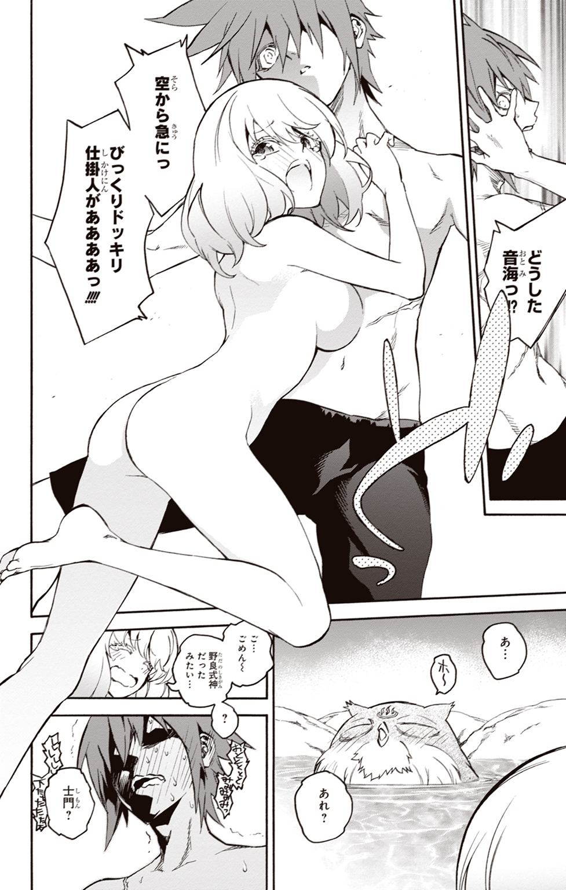
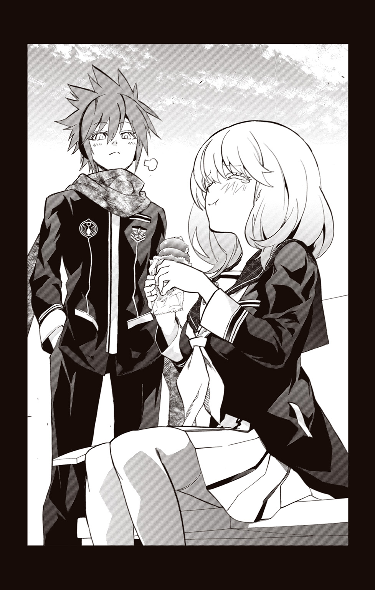
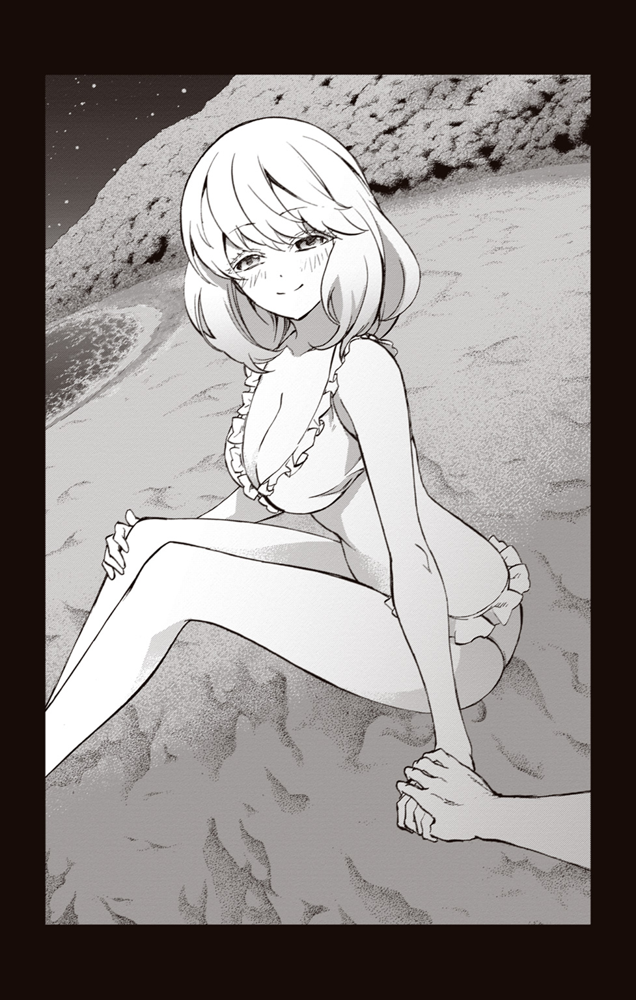

| 双星の陰陽師 ―士牙繭闢― | |
| 助野嘉昭 & 田中創 | |
この本は縦書きでレイアウトされています。
また、ご覧になる機種により、表示の差が認められることがあります。


周囲を見回し、私はごくりと息を吞む。
ここは天若家の敷地内に設置された修練場。木製の壁や板張りに囲まれた、古風な武道場のような建物だった。広さは前の高校の体育館くらいだろうか。
もっとも、険しい顔つきの男のひとたちがずらりと並んでいるこの光景は、学校の体育館などとは比べようもないほどの威圧感を放っているのだけれど。
「......うう、き、緊張する......」
数十対の鋭い目に射竦められて、私の胃はキリキリと悲鳴を上げていた。
目の前にいるこの面々は、天若家に属する陰陽師の方々である。
聞いた話によるとこの天若家は、古くから土御門島の暗部に属し、異端者を始末する仕事を任されていたのだという。お父さんに言わせれば、「陰陽連直属の忍者みたいなもの」なのだそうだ。
確かに、誰も彼も、雰囲気がただ者じゃないというか、怖そうなひとたちばかりだった。目つきが鋭くて、いかにもぶっそうな感じである。誰ひとり口を開こうとしない様子は、もはや不気味なくらいだ。
そんな天若の陰陽師集団にじっと見つめられながら、私はぶるりと背筋を震わせていた。こうして彼らと向かい合っているだけで、自分がいかに場違いかをまざまざと思い知らされてしまうのである。
なにせこの私――音海繭良は、修行を始めて二年そこそこの駆け出しにすぎない。島で活躍中の彼らに比べれば、陰陽師としてまだまだ未熟。
傍らに控えていた黒髪の女性が、私の表情を覗きこんできた。
「繭良様、どうかなされましたか。顔色が優れないようですが」
凜とした表情が魅力的な、黒い服を着た美人だ。左目に残る大きな傷は、長い間天若家を支えてきた歴戦の証なのだろう。
彼女、天若夕弦さんは、私がこの島に来た当初から、なにかと面倒を見てくれているひとだった。
私は「あのう」と恐縮しながら、彼女に尋ねる。
「本当に私、このひとたちの代表になっちゃったんですか......？」
「ええ、もちろんです」表情を変えずに、夕弦さんが頷いた。「なにせ今のあなたは、この天若家の長。十代目当主なのですから」
当主という言葉が、私の肩に重くのしかかる。
幼馴染のろくろに追いつきたい。そんな思いに任せて私が土御門島にやってきたのが、つい一週間ほど前のことだった。
陰陽師として目覚ましい成長を続ける幼馴染・焰魔堂ろくろ。
そもそも私が陰陽師を目指したのは、彼と対等でありたかったからという理由しかない。そんな私にとって、〝一家の当主〟というのは分不相応な肩書きだった。
当然、最初は断ろうと思ったのだが、夕弦さんいわく、
「この島で生きていく限りは、島中の人間があなたを〝天若清弦の娘〟として見るでしょう。そうでなくともあなたは式神・十二天将〝白虎〟を継承した身......。誰もがあなたに当主たる人物として期待をし、憧れを抱くはず。なにしろあの方の娘なんです。きっとできると私は信じます！」
ということらしく、彼女の圧倒的熱意に押し切られる形になってしまった。
どうせいずれ当主となるなら、早いうちから名乗っておいた方がいい――。そんな風に付け加えられ、今に至るのであった。
数ある陰陽師の家柄の中でも、この天若家は、天将十二家と呼ばれる名家中の名家なのだそうだ。総覇陰陽連でも、重要な立場にある......らしい。
当然、その当主という立場に課せられる責任は重い。少し前まで普通の女子高生をやっていた私からすれば、正直実感の湧かない話ではある。
「繭良様もおっしゃっていたではありませんか。清弦様の......お父様の生家の役に立ちたいと」
夕弦さんの視線が、じっと私を見据えた。
「なのに繭良様は、どうしてそんなに自信なさげなご様子なのですか？」
「だって」そんなの、理由はひとつしかない。「これから私、ここにいるひとたちと戦わなくちゃいけないんですよね......。それとこれとは話が全然別、というか」
視界には、思い思いの武器を持った数十人の屈強な陰陽師たち。どうやら、ここにいる人間全員と戦うのが、私の当主としての初仕事らしい。
「そもそも本当に、模擬戦なんて必要なんですか？」
「天若家は、特に実力を重んじる家系です。繭良様はまだ当主になられたばかり。まずは下々の者たちに当主の威厳を示すことで、統制を取ることから始めねばなりません」
そう言われても、にわかに頷き返すことはできなかった。
陰陽師としての修行を二年ほどこなしただけの若輩者が、果たして島の精鋭陰陽師たちを相手に打ち勝てるものなのだろうか。自信なんてまったくなかった。
「正直に申しますと、天若家の者の中にはいまだ、本土から来たあなたの実力に疑問を持つ者が多く......この模擬戦は、そうした者たちからの提案なのです」
「ええっ!? み......みんなが当主として期待してるって言ってませんでしたっけ......!?」
「期待してる〝はず〟と申しただけです」夕弦さんがさらりと答える。「当主であることの理由の如何にかかわらず、今ここではっきりと実力を示しておかないと、今後肩身の狭い思いをすることに変わりはないと思われますが？」
「うう......」
私が眉間に皺を寄せていると、集団の中から「では」と、低い声が響いた。
「一番手は、この自分が」
声を上げたのは、背の高い男性だった。年齢は二十代後半くらいだろうか。二色に染めた髪に、左頰の大きな傷。黒い色眼鏡をかけた、強面の人物である。
その不気味な雰囲気は、他の者たちの比ではない。ひと睨みされただけで、身が竦んでしまいそうになるのだ。
昔お母さんから聞いた、天若家の「律」という暗殺集団の話を思い出す。この男性は、まさにその殺し屋のイメージにピッタリだった。
「おお、隊長......」「早々に出るのですか」「さあ、早く隊長に道を開けろ」
周りからも一目置かれているのだろう。その男性が足を踏み出すと、集団がさっと左右に分かたれていく。
「よろしいか、繭良様」
彼は私の前で足を止め、軽く目礼をした。言動こそ丁寧に見えるけれど、その表情には笑みひとつない。すごく気難しそうなひとだ。
夕弦さんが、私にそっと耳打ちする。
「彼の名は依羅刃夜。天若の実働部隊の隊長です。天若家傘下の中では、最も腕の立つ男ですよ」
「も、最も腕が立つって......いきなり一番強いひと......と!?」
「順番など大した違いはないでしょう。そもそもこの模擬戦、繭良様の実力を皆に示すことが目的なのですから、むしろ最初に強い者と戦っておいた方が手間が省けるでしょう」
「はあ......」
私は覚悟を決め、その男――刃夜さんを見上げる。
「え、ええと......その、どうかお手柔らかに......」
彼は「はい」と頷くと、腰のホルダーから霊符を一枚引き抜いてみせた。
「急如律令」の呪文と共に、彼の両腕を黒い手甲が覆う。
あの鈍く光る黒い爪は確か、〝黒煉手甲〟という名の呪装だったはず。天若の陰陽師たちが好んで使う、標準装備だと聞いたことがある。
「どうぞ。繭良様も〝白虎〟の力を呪装なさるといい」
「え、いいんですか」
「手加減は無用。この修練場内にも結界を張っていますからね。あなたの全力を見せていただきたい」
十二天将の力の象徴、式神・白虎。学校では使用を禁じられているほどの強力な霊符である。
私は、「それなら」と霊符を手に呪文を紡いだ。
「じゅ、獣爪顕符っ！ 白蓮虎砲、急如律令っ......！」
私の両腕に、力強く輝く白銀の爪が現れる。お父さんから受け継いだ、私のとっておきの呪装である。果たしてこの力で、どこまで戦えるものだろうか。
「それでは一本目......始め!!」
夕弦さんの合図を皮切りに、他の陰陽師たちが一斉に距離を取った。
ついに戦闘開始だ。もう逃げられない。
「い、行きますっ......！」膝の震えを押し隠しつつ、刃夜さんを睨みつける。
対する彼は私の呪装に目を落とし、眉をひそめていた。
「聞けば繭良様は、その白蓮虎砲で婆娑羅ともやりあったとか」
「知ってるんですか」
「島の者は皆知っていますよ」刃夜さんが頷く。「しかしそのとき繭良様は、結局敵を仕留めきれず、双星の少年や〝朱雀〟の十二天将の力を借りることになった、と」
「は......はい」
「情けないことです。あの清弦様なら、きっとそんな失態は犯さなかったでしょう」
刃夜さんの挑発的な物言いに、私は思わずむっとしてしまう。
「なにが言いたいんですか......！」
「その白虎の爪が、ただのお飾りだということです」
「お飾り......!?」
次の瞬間、胃のあたりに強烈な衝撃が走った。
「うく......はっ......？」
いったい何が起こったのか。まったくわからなかった。
気づけば刃夜さんの身体は、すぐ目の前に接近していたのだ。彼の手甲がこちらの腹部に捩じこまれるまで、私はそれを認識することすらできなかったのである。
「天若のルーツは暗殺稼業。先手を取るのは定石です」
喉から掠れた吐息が漏れる。今にも胃の中のものが逆流しそうな気分だった。私は歯を食いしばりながら、なんとか痛みをこらえる。
相手の速度に全然反応できなかった。まさか身を守る暇すら与えられないなんて。
とにかく、まずは防御を固めなければ話にならない。あんな攻撃、もう一発もらったら間違いなく意識が飛んでしまう。
「が、鎧包業羅っ！ 急如律――」
私は発動の呪文を口にしようとしたのだが、
「無駄です」
刃夜さんの巨大な爪が、私の手にしていた霊符を切り裂いてしまった。
「えっ」と呆気に取られている暇もない。次の瞬間、黒い手甲による裏拳が私の横っ面に叩きこまれていたのだ。
「うっ......かはっっ!?」
目の奥で火花が弾けるような衝撃。頭の中がぐわんぐわんと大きく揺れる。
「全ての行動がワンテンポ遅いっ......！」
そう言いつつ、刃夜さんは再び私のボディに手甲を叩きこんだ。
「うっ......！」強烈な痛みと共に、胃液が喉を駆け上る。
――は......反撃しな......きゃ！
そう思ったときにはすでに、私の身体は修練場の板張りの上にうつ伏せに倒れていた。
誰がどう見ても、完全にノックアウトという状況だった。当主の威厳など、もはや欠片もない。
夕弦さんの「そこまで」という声が、無情にも場内に響き渡った。
「弱い......。十二天将の力を持っていながらこの程度ですか」
ため息をつきながら、刃夜さんが私を見下ろした。
「先代様の足元にも及びません。やはり、繭良様に天若家当主の名は荷が重すぎるようだ」
「うう......」
「正直に言って、あなたがこの先、土御門島での戦いを潜り抜けられるとは思えない」
何も言い返せなかった。たった数十秒間の攻防で、私は立ち上がることさえできなくなってしまったのだから。
「その爪がこちらの喉元まで届かなかったのは、あなたに命がけの覚悟がなかったせいだ」
「い、命がけの、覚悟......？」
「この島ではね......常に命をかけたやり取りが行われてるんですよ。命を奪う覚悟も命を捨てる覚悟もない人間に、陰陽師は向いていません。自分に言えるのはそれだけです」
それはまさに、心を抉られるくらいショックな一言だった。
私だって幾度かの実戦を経験している。これでも自分なりに、陰陽師として戦う覚悟を持って島に来たのだ。少なくとも、自分ではそう思っていた。思っていた......のに......。
「......それじゃ、ダメだったの......？」
歯嚙みをしながら、床板に目を落とす。
「命が惜しいなら、さっさとこの島から出ていくことですね」
私には興味を失ったとばかりに、刃夜さんは「失礼」と踵を返した。彼はそのまま修練場の敷居をまたぎ、外に出ていってしまう。
「期待外れだったな」「清弦様の娘といっても、こんなものか」
様子を窺っていた他の陰陽師たちも、一様に冷めた面持ちだった。床に這いつくばる私を虫けらのように一瞥し、そのまま修練場をあとにしてしまう。
「あ、あのっ......！ ま......待っ......て！」
必死に喉から声を絞り出しても、彼らが振り向くことはなかった。まるで何も聞こえていないかのように、母屋の方へと戻っていく。
「もう十分、繭良様の実力はわかった――ということでしょうね」
夕弦さんが肩を竦める。
私にはもはや、去る者たちの背中を見送りながら、ぐっと歯嚙みすることしかできなかった。
出ていった彼らの気持ちもわからないではないのだ。たったひとりの陰陽師を相手に手も足も出なかった当主に、誰がついていきたいのかという話である。
両腕の白虎の呪装に目を落とし、私は深いため息をついた。
どうやら天若家十代目当主の前途は、とてつもなく多難らしい。
※
そんな模擬戦の日から、早くも三日が経過していた。
青陽院の授業も土日はお休み。なので私は学院の寮を離れて、天若の屋敷に戻ってきていた。
週末は実家に戻り、当主の仕事をこなす。当主を引き受ける際、私は夕弦さんとそう取り決めたのである。
なにせ天将十二家の当主ともなれば、いろいろと忙しいものらしい。
任務への参加者を振り分けたり、一族会議を取り仕切ったり、部下たちの修練を指導したり......やらなければならないことが山積みなのだそうだ。
少なくとも、夕弦さんからはそう聞いていた。
それなのに、
「うーん。何もすることがない......」
ひとり縁側に座り、空を流れる雲をただぼんやりと見つめる。現在私がこの家で行っている仕事といえば、主にこれだけだった。
この暇さ加減は一体なんなのだろう。忙しいどころか、まさか、ひとりでぼうっとするくらいしかすることがないだなんて。
「なんなんだろう、この扱い。窓際ロンリーウルフ族みたい......」
そんなことを呟いていると、背後にひとの立つ気配があった。
「何をワケのわからないこと言っているんです」
夕弦さんだ。辛気臭い顔で、縁側に座る私を見下ろしている。
「暇な理由は明白です。このあいだの模擬戦で、繭良様に対する傘下の評価は固まりました。『あなたは当主に相応しくない』というのが大方の意見です」
「そ......そうなるのは当然ですよね」
あの勝負、実力不足は誰の目にも明らかだった。ある意味、正当な評価である。
「皆さんを見ていてわかります。誰も私を当主として必要としてないって」
夕弦さんを見上げ、私は続ける。
「会議に出ても私抜きで話を進められちゃうし、仕事の手伝いを申し出ても無視されちゃうし。そもそも禍野での任務にすら、一回も連れていってもらえてないし......」
「まあ、そうでしょうね」夕弦さんが首肯する。
「私がここにいる意味ってなんなんでしょう？」
「少なくとも、形式上の意味はありますよ」
「つまり......お飾りってことですか？」
「そうなりますね」
夕弦さんにはっきりとそう言われ、私は黙らざるを得なかった。
私に当主としての能力がないのは、自他ともに認めているところである。しかしそれでも、天若家の一員になったのだから、せめて何かの役には立ちたいと思っていたのに。
それをこうもきっぱり言われてしまうと、どうにもやるせない気分になってしまう。
「っていうか私、ここの家のひとたちにめちゃくちゃ嫌われてますよね......。当主とか、そういう話抜きで」
「どうしてそう思うのです？」
「だって廊下ですれ違ったときとか、ときどき、すごく怖い顔で睨まれるんですよ？ 私が愛想よく笑い返しても、『ふん』って鼻で笑われたりして」
「それは別に、好き嫌いの問題ではないと思いますよ」夕弦さんが肩を竦める。「基本的にうちの構成員は、武骨な武闘派揃いですから。そもそも彼らに愛想なんてものを期待する方が間違いです」
「そ、そうなんですか......」
「そもそも、繭良様の認識の違いでしょう。天若家を、本土の仲良しサークルだとでもお思いでしたか？」
夕弦さんの厳しい言葉に、私は肩を落とす。
どうやらこの天若家、ちょっと前まで普通の女子高生だった私にとっては、相当に厳しい環境のようだ。
同じ天将十二家でも、前にお世話になった斑鳩家とはまるで雰囲気が違っていた。向こうがほんわかアットホーム集団だとしたら、こっちは殺伐とした仕事人集団なのだから。
私の考えは、やはり甘かったのかもしれない。こんなことなら、当主なんて引き受けるべきではなかった。
「こんなんで私、この先ちゃんとやっていけるのかなあ......」
今日だけでもう何度目になるかわからないため息をついていると、夕弦さんが神妙な表情で「ところで」と口を開いた。
「今のうちに、繭良様のお耳に入れておきたいことがございます。例の、御前試合の件なのですが」
「あ、はい。御前試合」
確か正式には〝波達羅盈城御前試合〟という名だったろうか。
二年に一回開かれる、陰陽師同士の武闘大会みたいなものだと聞いている。通例として、十二天将は各々、家の代表として参加することが義務付けられていたはずだ。
「前に夕弦さんが、私に出場してほしいって言ってたやつですよね？」
「ええ。そうです」
正直言えば、私はあまり出場には乗り気ではなかった。
式神・白虎を継承したとはいっても、他の十二天将には遠く及ばないのだ。私が天若家の代表として出たところで、ミスマッチ感が半端ないだろう。
夕弦さんがどこか躊躇いがちな声色で続ける。
「実はどうやら部下たちの間で、天若の代表として繭良様ではなく、刃夜を推そうという動きがあるようなのです」
「え？」
「繭良様の実力不足は、模擬戦で証明された通りです。このまま繭良様を参加させては、天若家の恥さらしになりかねない。代わりに刃夜を代表とした方がまだマシだと......。そういう意見が数多くありますね」
「そ......そうですか」
思わず納得してしまった。皆さんの言う通りである。
「じゃあ、刃夜さんに代表になってもらいましょうよ。あのひとなら、私なんかよりもよっぽどいい成績を残せると思いますし――」
「そんなのダメに決まっているでしょう」夕弦さんがピシャリと言い捨てる。「実力はどうあれ、繭良様は天若家十代目当主なのです。今ここで出場を辞退などしようものなら、失った立場を挽回するせっかくの機会を逃すことになりますよ!!」
「でも......」
「もっと、ご自分に自信を持ってください繭良様」
夕弦さんが、私をじっと見つめて続ける。
「なにせあなたはあの、清弦様のご息女なのですから」
天若清弦は、私の実の父親である。
誰が見ても口と態度が悪いひとだけれど、陰陽師としては破格の実力者として名が知られている。特にこの島では、ものすごい有名人扱いをされているのだ。
「先代の清弦様は、天若家のみならず、島全ての陰陽師の憧れでした。今でもあの方を英雄として絶対視している者も多いのです」
「あのお父さんが英雄......。うーん......そうなんだ。そうなのか？」
「清弦様はかつて、天若家の悪しき体制を打ち砕き、島を蝕む呪いを駆逐した人物です。その功績だけでも、陰陽師千年の歴史に名を刻むに足るお方だと思います」
普段の夕弦さんはとってもクールな女性なのに、なぜかお父さんのことを語るときだけは毎度熱弁を振るってしまうのだ。よほど、天若清弦という陰陽師を尊敬しているということなのだろう。
身内をベタ褒めされて、私も悪い気分じゃない。
「その清弦様の娘であるあなたが、実力不足で出場辞退なんてことにでもなったら......。皆がどう思うでしょうね」
夕弦さんに言われ、「うーん」と考えこむ。お父さんの評価を下げてしまうのは、私だって望んでいないことだ。
「私が出場を辞退したとしても、出場して情けない結果になったとしても、どっちにしてもお父さんに迷惑がかかるってことですよね......？」
私の問いに、夕弦さんが「はい」と頷いた。
「どのみち繭良様が、当主に相応しい実力を示さないことには、島の人間は納得しないでしょう。胸を張って、清弦様の娘だと言えるようでないと」
私だって、お父さんを尊敬している。この二年、ずっと修行を見てもらっていたし、多少力業ではあったけれど、悩んでいた私に前へ進む勇気と機会をくれた。恩を仇で返したくはない。
「でも、刃夜さんや......傘下のひとたちは私が御前試合に出るのは望んでいないんですよね......？」
「現状は」夕弦さんが頷く。
「じゃ......じゃあどうすれば」
「ですので、繭良様にはもう一度、御前試合の出場権をかけて戦っていただきます！」
唐突に告げられた夕弦さんの言葉に、私は「 っっ!?」と声を裏返らせてしまった。
っっ!?」と声を裏返らせてしまった。
「もちろん、すぐにというわけではありません。場所は先日戦った修練場で。時は......今から二カ月後。御前試合のちょうど一カ月前に行おうと思います」
「に......二カ月？」
「刃夜にはすでに話を通し、向こうもそれで構わない、と言ってきました。とはいえ、繭良様がやはりまだそのときでないと言うのなら――」
「やります」
考えるよりも先に言葉が出ていた。頭の中では「たった二カ月で刃夜さんに追いつけるはずがない」とか後ろ向きな考えがよぎっていたはずなのに......口から出たのは、自分でも意外なほどポジティブな台詞だったのである。
「......よろしいのですね？」
夕弦さんが、どこか試すような視線で私を見つめる。
私は「はい」と大きく首を縦に振った。
「二カ月でどこまで変われるかわからないけれど......できるできないじゃない。〝やるしかない〟......ですよね？」
「そういうことです」
そう。きっとろくろなら、あの天然熱血トレイン焰魔堂ろくろなら、こういう逆境のときこそ全速力で突っ走るだろう。きっとそれは止まったり引き返したりしても道がないのを知っているから。
「私も......いよいよろくろの性格が伝染ってきたかな......？」
「本土から一緒に来たご友人のことですか？」夕弦さんがくすりと頰を緩める。「そのご友人の性格がどのようなものかはわかりませんが......。何度も言いますが、もっと自信を持ってください繭良様。なにせあなたはたった一日で式神・白虎に認められ、十二天将の力を得た陰陽師なのですから」
「はい......が、頑張ります！」
絶対勝ちます！ なんてことまでは言えないけれど......お父さんの名を穢す真似も絶対にしたくない。
そう。どんなときだって逃げた先に活路が生まれることなんてないんだ。
「二カ月で刃夜を超える。それは並大抵の苦労ではないでしょうが、繭良様なら必ず達成できると信じていますよ」
夕弦さんの励ましに、私はにっこりと笑みで応えた。
そうだ。きっと、できるはず。
しかしこのときの私は、全然と言っていいほどに考えが甘かったのだ。これから始まる修行がまさかあんなハードなものになるだなんて、まるで予想もしていなかったのだから。
※
桶に張った水をじっと覗きこみながら、精神を集中させる。自分の中にいるもうひとりの自分に、静かに語りかけるイメージだ。
「......ふう......」
水面には、少し疲れた様子の私の顔が映っている。
いわゆる、水鏡の儀というやつだ。自らに宿る呪護者と対話することで、体内から呪力を引き出す。本土にいた頃から毎日繰り返しやってきた修行である。
千里の道も一歩からとはいうけれど、これはさすがに基礎的すぎただろうか。
「こんないつも通りの訓練を続けて、強くなれるのかなあ......」
ひと息ついて、汚れた天井を見上げる。
ここは青陽院付属寮の敷地内に設けられた、寮生用訓練室だ。木造平屋の、こぢんまりとした古い建物である。まあ訓練室といえば聞こえはいいけれど、実際は学校の倉庫として利用されているだけのオンボロ小屋だ。
私の他に利用者の姿がないのも当然だろう。他の生徒は、青陽院の校舎内にある訓練室を使っているのだ。向こうは新しく規模も大きいので、そちらの方が人気なのである。
逆に言えば、ひとりで集中して修行に取り組みたいときには、こちらの訓練室の方が都合がいい。ちょっと古くてカビくさいのが難点だけれど、修行に必要な武具や呪具は一通り揃っているわけだし。
「もっともいくら道具があったところで、うまい修行のやり方がわからなきゃ話にならないんだけど......」
そんなことを考えながら、再び水面に目を落とそうとしたそのとき、懐から、『気が焦りすぎだ』と、しわがれた声が聞こえてきた。
『呪力が乱れているぞ』
獣爪顕符に宿る式神、白虎である。
私がこの式神と言葉を交わせるようになったのは、まだほんの数カ月前のこと。私にとって初めての実戦となった、小夜ちゃん救出作戦がきっかけだった。
婆娑羅との戦いで窮地に陥った私を救うために、白虎が力を貸してくれたのである。それ以来この式神は折に触れて、こうして私に声をかけてくるようになったのだった。
「そ......そうかな」懐から霊符を取り出し、問い返す。
『強くならなければならないという事情はわかるが、急いては事を仕損じるものだ』
落ち着いた口調で白虎が言う。
「そりゃそうだけど......」
『地に足がついていなければ、大事な目標も見えなくなるぞ。焦らずとも、いずれお前は一流の陰陽師になれるはずだ』
「いずれって、どのくらい？」
白虎が『そうだな』と唸り声を上げる。
『十年か、あるいは二十年か......。己と真摯に向き合い鍛錬を積み重ねれば、十二天将・白虎の名に恥じぬ陰陽師になっているだろう』
「それじゃ遅すぎるってば」ため息をつく。
この白虎は、かの伝説の陰陽師、安倍晴明が使役したという式神のひとつらしい。千年もの間、代々受け継がれてきた式神だけに、人間とは時間感覚が異なっているのだろう。さすがにそこまでは待っていられない。
「ねえ。二カ月以内で強くなれるようなすごい修行法とか、なにか知らない？」
『短期間で、となるとやはり実戦に勝るものはないだろう』
「じ......実戦」
確かに私には、実戦の経験値が圧倒的に足りていない。ケガレ祓いをしたことすら、実はほとんどないのだ。禍野で実戦をこなすというのは、非常に有効な案だろう。
「わ......私も、それは考えてたんだけど」
『ふむ』
「この島の禍野って、本部の許可がないと入れないんだって。だから、勝手に入って勝手にケガレと戦うってわけにはいかないの。陰陽連からある程度の実力者だと認められているか、あるいはそういう実力者に同行してもらうか......。私ひとりじゃ、許可が下りないんだよ」
この島において一人前の陰陽師として実力を認めてもらうためには、陰陽連が命じる任務をこなす必要がある。しかし、天若家内でお荷物扱いされている私は、その任務に同行させてもらうことすらできない状態なのだった。
すごいジレンマ。力を示したくても、その機会すら与えられないなんて。
『現代の十二天将は、ずいぶんと窮屈な扱いを受けているのだな』
「いや、だって私、厳密にはまだ十二天将じゃないし......。えっと、継承式典だっけ？ そういうきちんとした儀式で任命されないと、十二天将だって認めてもらえないみたい」
白虎継承式典は、現在〝延期〟という状態になっている。要するに音海繭良にはまだ、十二天将としての自覚と実力が足りていないということだ。
白虎が不機嫌そうに『ふん』と鼻を鳴らした。
「だから結局こうやって、いつも通りの基礎修行を繰り返すしかないんだよね」
誰か師と呼べる人がいてくれればいいのだけれど、かといって夕弦さんの力を借りることはできない。不甲斐ない私の代わりに、今の天若家をまとめてくれているのは彼女なのだ。これ以上の迷惑はかけられない。
他に知り合いといえば、あとはもう、ろくろくらいのものだ。しかし彼も、焰魔堂家という自分の家を立ち上げ、御前試合に向けて修行の真っ最中なのである。こちらに気を遣わせるわけにはいかないだろう。
なによりろくろには、化野紅緒さんという奥さんがいる（本人たちは認めていないとは言っているが）。いろんな事情があって化野さんが本土に残ることになった今、私がろくろに師事するのは......なんというか、少し後ろめたい感情が先立ってしまう。
白虎が『やれやれ』とため息をついた。
『世知辛いものだな。協力者のひとりも見つけられないとは』
「御前試合が迫ってるからね。基本的にみんな、他人に時間を割いてる余裕なんてないんだよ」
青陽院の同級生たちも似たようなものだ。御前試合出場を考えているひとたちは、みんなそれぞれ自分のことでいっぱいの様子なのである。
普段、実戦演習などで同じグループで行動している五百蔵志鶴さんにだって、「俺だって御前試合に向けて忙しいんだ」とはっきり断られてしまった。試合の対戦相手になるかもしれないんだから、それは陰陽師として当然の対応なんだけれど。
はあ、とため息をついていると、背後の訓練室の扉ががちゃりと音を立てた。
「ん......音海？」
部屋に入ってきたのは、背の高い年上の少年だった。つんつんの赤毛に、首に巻いたストール。耳につけたヘッドホンがトレードマークの、お馴染みの顔である。
「こんなところで、ひとりで何をブツブツ呟いているんだ？」
斑鳩士門。十二天将〝朱雀〟の名を持つ、この島トップクラスの陰陽師の登場だった。
大袈裟かもしれないが、このとき私の目には、間違いなく士門が「神様」に見えたのである。

士門はどうやら、個人的な探し物のためにこの訓練室を訪れたらしい。ここに保管されていた年代物の盆栽鉢を、校長から譲り受ける手筈になっていたのだそうだ。
こう見えて士門、なかなか渋い趣味の持ち主らしい。
「――話はわかった」
盆栽鉢を丁寧に風呂敷に包みながら、士門が頷いた。
「お願い士門！」私は精一杯、頭を下げる。「つきっきりでとは言いません！ 何かヒントになるものでもいいの！ 二カ月間で今より少しでも強くなる方法を教えてください！」
士門の他に私が頼れそうなひとは、今のところ思いつかない。もはや私には、目の前のこの神様に頼るしか道はないのだ。
しかし士門は、
「......それは、無理な話だ」
それだけ言って、首を振る。
無理もないだろう。士門は私と違って、誰からも認められた正式な十二天将として活躍する天才陰陽師なのだ。
他人の修行のために時間を割く余裕などないのかもしれない。
「そっか......そ、そうだよね」肩を落とす。
士門を頼れないとなると、振り出しに逆戻りである。私にはもう基礎修行を繰り返すしか道がないのだ。これで本当に刃夜さんを超えられるのだろうか――。
私がため息交じりに桶に向き直ろうとしたそのとき、士門が口を開いた。
「引き受けておいて、最後まで面倒を見ないなんていうのは俺の性に合わないからな」
「へ？」
「やるからには、徹底的にやらねばな。お前の指導は俺が引き受ける」
士門が私をまっすぐ見つめ、そう言い放った。どうやら彼は、生半可な手ほどきではなく、私にとことん修行をつけてくれるつもりらしい。
「お前を二カ月で依羅という男に勝てるようにしてやろう」
「ほ、ほんとに......？ でも士門だって、御前試合に向けて準備しないとじゃないの？」
「当然、自分の修行をした上でだ」士門が、ふっと頰を緩めた。「それに......清弦さんには、昔本当に世話になったからな。常々、何らかの形で恩返しをしたいと思っていたんだ」
「ありがとう......！」私は士門を見上げ、心からの微笑みを返した。「士門が協力してくれれば百人力だよ。よろしくお願いしますっ！」
士門が「ただ」と続ける。
「残り時間を考えれば、通常のトレーニングをしても効果は薄い。どうせやるなら、最大限に効果を発揮する方法を採らねばならない」
「そんな、効率いい方法があるの？」
「ああ。清弦さん考案のちょうどいい修行がある。呪力、体力、心身を共に鍛えられる修行法がな。当然簡単に達成できるものではないが......この修行をクリアすることができれば確実に、そして飛躍的に強くなれる！」
期待と不安に、私はごくりと息を吞む。お父さんが考案の修行ともなれば、その厳しさは推して知るべしだ。
「ぐ、具体的に何をすればいいの？」
「なにも特別なことをする必要はない。学校に通って、飯を食って、鍛錬して、寝る。基本的には、普段通りの生活を送ればいい」
「え？」どういう意味だろう。それのどこがキツイ修行なのか。
首を捻る私を見て、士門が「ただし」と付け加えた。
「生活するうえで、とあるハンデをつけさせてもらう」
「ハンデ......？」
「そう構えるな。別に鎖で縛り上げようというんじゃない。少々動きを制限するだけだ」
不穏な言葉だった。いったい私はどんな目に遭わされてしまうのか。
その修行の全容が明らかになったのは、あくる日のことである。
※
空気の澄んだ、よく晴れた朝だった。日差しもすごく爽やか。
これが普通の日だったなら、私はとても気持ちのいい気分で学校に登校できていたことだろう。きっと鼻歌なんて歌いながら、軽やかな足取りで。
しかし今日の私の足取りは、軽やかとは程遠いものだった。
「うううっ......！ ぎ、ぎぎぎぎぎぎっ......！」
歯を食いしばりながら、一歩ずつ通学路を歩く。右足、左足、右足......普段何気なく行っていた歩行すら、今の私にはとてつもない苦行だった。
「これのどこが〝少々〟なのよっ......!!」
青陽院に通う陰陽師候補生たちが、次々と私の脇を追い抜いていく。錆びついたロボットのようにぎこちなく動く私を見て、誰も彼もが「なにしてんのこの子」と怪訝な表情を浮かべているのだ。
「うう......め......目立ってるぅ ......！」
......！」
全身が重いので、歩みの速度は亀以下だった。これは比喩などではなく、実際に今しがた、道をお散歩中の亀さん式神に追い抜かれてしまったところなのである。
このペースでは、授業開始までに教室にたどり着けるかどうかすら危うい。なにせたった一歩の距離を移動するのに、数十秒近く時間がかかってしまうのだから。
「ほら。もう少しで昇降口だぞ」
隣を歩く士門が、平然とそう告げる。
この青陽院において彼の名を知らない者はいない。一組の超有名人なのだ。先ほど私に渋い顔を向けた女子生徒たちも、「士門様おはようございます」「今朝も素敵ですね」と淑やかな挨拶をするくらいである。
そう。士門はなかなかにモテるのだ。ルックスも実力も折り紙つきだから、当然なのだけれど。
そんな士門が私と一緒に登校しているのは、彼が今朝がた私の暮らす学生寮を訪れたからだ。この修行で必要な処置をするために、わざわざ早起きをして来てくれたのである。早朝三時という、「早起き」と言っていいかわからない時間ではあったが。
手首に巻いた霊符に目を落とし、私はため息をついた。
「こ、この〝絶門符〟だっけ......？ とんでもない代物だよね......。まるで、全身に鉄の重りを括りつけられてるみたい」
士門が言う〝ハンデ〟とは、私の身体に張りつけられた霊符のことだった。両手首に一枚ずつ、両足首に一枚ずつ、合計四枚が巻きつけられている。
轟腕符や韋駄天符など身体強化の霊符は数多く存在するが、この絶門符はそれと逆の効能を及ぼすものらしい。どうやら身体的な機能を著しく制限してしまうものだそうだ。
こんな変な霊符まであるとは......土御門島ってやっぱりすごい。
「ただ筋力だけに頼ればいいというものでもない。呪力で絶門符の力を弱めつつ基礎動作を行う。慣れるまでの時間はひとによるが......刻限を考えるなら、一週間以内にはそれをつけたまま口笛を吹いてスキップができるくらいにはなってもらわないとな」
「そ......そんなハッピーな気分になんて全然ならないんですけど」
寮からここまでのたった数百メートル足らずの移動で、気分的にはフルマラソンをこなしたくらいにもうヘトヘト。いつ倒れてもおかしくない状態だった。
息を荒らげている私を見下ろしながら、士門が言い放つ。
「ちゃきちゃき歩け。わかってるとは思うが、放課後時間のあるときは組手や実戦練習をするからな......それをつけた状態でな」
「うう......士門のサディスティック鬼軍曹Ⅱ世!!」
この修行、確かに熟練の陰陽師でも音を上げたくなるだろう。私なんて、開始一時間ですでに涙目になってしまっているくらいだし。
ぜいぜいと息を吐きながら、隣の士門を見上げる。
「これは確かに、すごく体力がつきそう」
「どうしても辛かったら、ギブアップしろ。身体を壊してしまっては元も子もないからな」
そんな士門の言葉に、私は「ううん」と首を振る。
「頑張るよっ......！ こんなすぐに弱音吐いてたら、士門に申し訳が......立たないから......ね！」
そんなやり取りをしていると、校舎の方から予鈴が聞こえてきた。
まずい。あと五分以内に教室にたどり着かなければ、遅刻扱いになってしまう。
「急ぐぞ音海。走れ」
唐突に士門にそう告げられ、私は「っ!?」と耳を疑ってしまう。
「歩くのもいっぱいいっぱいなのに？」
「当然だ。あんただって遅刻の罰則を食らいたくはないだろう」
ちなみに青陽院では遅刻した場合、放課後に校長室で反省文を書かされることになっている。もちろんただの反省文ではない。校長である新さんが推薦するよくわからないアニメ作品を延々と数時間見せられた挙句、その作品の教訓を盛りこんだ上で書かなければならないのだそうだ。
「新さんを満足させられる反省文が書けるまで、よくわからんアニメを何十回もリピートで見せられるんだぞ......。あんた、そんな目に遭いたいか？」
「そ、それはキツイよね......。うん。遅刻は絶対できない」
「だったら急げ！」
それだけ言って、士門は早足に駆けようとする。
こうなったら私も覚悟を決めるしかない。気合いを入れ直し、全力で駆け出すべく前傾姿勢を取ったのだが、
「あっ」
バランスを崩してしまう。手足が重すぎて、駆け出すどころではなかったのだ。
前方の士門の背中に体当たりするように、私は思い切り倒れこんでしまった。
「うお......!?」
路上に身体を打ちつけ、士門が顔をしかめる。私の下敷きになってしまったのだ。
慌てて私は「ごめん！」と謝罪する。
「い、いや、音海、謝るよりも前に、早くどいてくれないか......」
そういう士門の首筋には、冷や汗がだらだら。頰にほんのりと赤みが差している。妙に恥ずかしそうな顔色......。
そう。気づけば私は、ハレンチにも彼の背中に胸を押し当てるような格好になってしまっていたのである。
「ひゃあああっ!? ごごご、ごめん士門！」
「い、いいから早く身体をどかしてくれ......！」
士門が声を荒らげたのだが、私の手足はなかなか動いてくれない。絶門符による重さと状況によるパニックのせいだろう。私はもぞもぞと、彼の身体の上で這い回るのが精一杯だったのである。
「よいしょ、んしょ......！」
「だ、だから音海、そんなに身体を動かすと......！」
「しょ、しょうがないでしょ......！ 身体が持ち上がらないんだもん！」
そんな言い合いをしているうちに、校舎の方から授業開始の本鈴が鳴り響いてしまった。
「「あ」」
あえなく遅刻決定。思わずふたりで顔を見合わせる。
私の修行初日は、そんなてんやわんやから幕を開けたのだった。
※
昼休みが始まると、校舎はにわかに活気づく。
午前のカリキュラムから解放された学生たちが、足早に学食へ向かうのだ。陰陽師育成の専門学校とはいえ、こういうところは本土の高校と変わらない。
もちろん私だって、普段ならウキウキ気分だ。グループのみんなと一緒に「ランチどうしようか」なんて笑い合っているところなのだけど......さすがに今日はもう、そんな元気は残っていなかった。
「あうう......疲れた......」
中庭のベンチに腰を下ろし、手首の霊符に目を落とす。この絶門符のおかげで、私の午前中の授業は散々だったのだ。
なにせほんの少し身体を動かすだけで、ものすごくスタミナを消費してしまうのである。実技系の授業は言うに及ばず、座学の授業すら超しんどい。たった数行の板書を写すだけで、腕が攣りそうになってしまうのだから。
午前中の私は、明らかに挙動不審だったのだろう。教室のクラスメートたちにも「音海さんどっか体調悪いの？」と心配されてしまったほどだった。詳しく事情を説明する気力すらなかったので、「ちょっと寝不足で......」と適当に愛想笑いをして誤魔化したけれど。
そんなこんなですっかり疲れきってしまった私は、身体を引きずるようにしてこの中庭へとやってきたのだった。
「お腹ペコペコだけど......でも動けない......」
今日に限って大失敗だったのは、お弁当を作らないで登校してしまったことだ。
学食で何か食べればいいやと思っていたのだが、今の私にはその体力すら残っていない。
「こんなへろへろの状態で学食に行ったら、また悪目立ちしてしまう......」
学食も混んでいる時間帯だろうし、お昼を買うだけでひと苦労してしまいそうだ。せめてもう少し時間を置いてから向かった方がいいだろう。
とりあえずぼんやりと中庭を見渡していると、
「あれ？」
校舎の方から、見知った顔が出てくるのを見つけた。
ぼさっとした黒髪に、まだまだあどけなさの残る顔立ち。私のよく知る幼馴染が、何やら浮かない面持ちで花壇脇を歩いていたのだ。
焰魔堂ろくろ。私と同時にこの青陽院に編入した、陰陽師の男の子である。
「おーい、ろくろ！」彼に向かって声をかける。
「あ、繭良」
私に気づいたろくろが、ゆっくりとこちらに歩いてくる。
どうしたんだろう。いつも元気なろくろには珍しく、なんだか声に張りがない。
「どうしたの？ お昼ごはん代落としちゃったの？」
ろくろはそんな私の冗談に「ガキ扱いすんなああっ!!」と大口で吼える。
「実は補習がさ、死ぬほど大変なんだよ」
「補習？」
「いやほら、俺、なんか劣等生ってことで、先生たちに目をつけられちゃってるじゃん」
「ああ、それは聞いたけど」
ろくろはこの青陽院に入るにあたって、陰陽頭様の手で呪力を封じられてしまっているのだ。そのせいで本来の実力を発揮できず、何かと苦労をしているらしい。
「最悪なんだよ......。おかげで昼休みだってのに、これから補習を受けなきゃなんない羽目になっちゃってさ......」
気落ちした様子のろくろに、私は「なるほどねえ」と相槌を打つ。
「その気持ち、私もちょっとわかるかも」
「え？ どういう意味？」
眉をひそめるろくろに、「まあいろいろね」と曖昧に微笑み返す。
「いや、ほら......。今まで普通にできていたことができなくなっちゃうのって、正直辛いものじゃない？ 歯がゆい、っていうか」
「ああ、そういや、繭良も白虎を使用禁止にされちゃってるんだっけ」
実は現在ではそれに加えて、さらに身体能力が低下しているのである。あえて口には出さないけれど。
ろくろは「キツイよな」とため息をつきながら、
「こっちは御前試合までに仲間を集めなきゃなんないってのに。補習なんて受けてる場合じゃねえんだけどなあ」
「このところ、いつも忙しそうにしてるよね」
「ま、いっこいっこやっていくしかねーけどな。こんなところでへこたれてたら、本土で頑張ってる紅緒に顔向けできねーもんな！」
こういう話を聞くと、最近のろくろは少し大人になったような気がする。自分の目標に向かって、ひとりでちゃんと進んでいける人間になったというか。
幼馴染としては感心する反面......やっぱりちょっと寂しい部分もあったりして。
ろくろが私に向き直る。
「繭良はどうなの？ さっきちょっと、困ったような顔してたけど」
「え、私？」
困っているのが顔に出てしまっていたのだろうか。さすが幼馴染。
「私はまあ、うん。普通かな」
「普通って？」
「それなりに頑張ってるよ。天若家の新当主としての生活も、ちょっとずつ軌道に乗り始めたかなあ、って感じ」
本当は軌道どころか暗礁に乗り上げてしまっているのだけれど、それをろくろに言うことはできなかった。精一杯頑張っている幼馴染に、これ以上余計なことで心配をかけたくなかったからだ。
作り笑顔を浮かべる私を見下ろし、ろくろは「へえ」と感心するような声を上げた。
「最初は自信なさそうだったけど、なんだ、繭良も頑張ってるんじゃん」
「ま、まあね」
「そんじゃ、俺も頑張んなきゃだな。とりあえずは目先の補習からだけど」
それだけ言って、ろくろは校舎の方へと戻っていく。
彼を見送るために振った右腕が、なんだかすごく重かった。いろいろな意味で。
「はあ......。ろくろはすごいよね、やっぱり」
なんだかんだ現状に文句を垂れつつも、決してへこたれない。今回だってきっと、私が何かするまでもなく、自分の力で困難を乗り越えてしまうだろう。
まったくあいつ、いつの間にこんなに立派になっちゃったんだか。
スパルタ修行のせいで早くも音を上げ始めている私からすれば、ちょっと眩しく見えてしまうくらいだ。
「今度はちゃんと、心から『頑張ってる』って言えるようにならなきゃ」
そんなことをひとりで呟いていると、後ろから「なに黄昏れてるんだ」と声が聞こえてきた。
振り向くとそこには、両手にビニール袋を提げた士門の姿があった。中庭で昼食をとるつもりなのだろうか。
「あいつも、なにかと苦労を背負いこむ男だよな」
ろくろの背中を見つめつつ、士門が私の隣に腰を下ろす。
「あいつって、ろくろのこと？」
「島に来た当初には、斑鳩家にも誘ったんだがな......。でもあいつは結局どこの家にも入らず、自分の家を立ち上げることを選んだんだ。それが茨の道だと知っていながらな」
なるほど、そんなことがあったのか。
「ろくろって、昔からそうなんだよね。一度自分で決めちゃったら、どんな障害があろうがお構いなしみたいなところがあって......。それでずいぶんハラハラさせられちゃうこともあったんだけど」
もう一度陰陽師を目指すって言ったときも。小夜ちゃんを助けに行くって言ったときも。ろくろは放っておくと、どんどん無謀な挑戦をしてしまう。
そしてそれらを乗り越えて、すぐに私の手の届かないところへ行ってしまうのだ。
私は「でも」と続ける。
「ろくろはきっと大丈夫。自分の家を立ち上げるのだって、きっと上手くやっていくと思うよ」
私の言葉を聞いて、士門は「そうか」と頷いた。
「音海が言うんならそうなのかもしれないな。なにせろくろのことを、昔からずっと見てるわけだから」
「そんな、ずっとってわけじゃないけど」
「違うのか？ 俺が気づくと、あんたはいつもあいつを目で追っているような気がするが」
士門にそう指摘され、私は「え」と声を上げてしまう。外から見てもわかるほど、私はろくろばかりを見ていたということなのか。
「い、いやほら、ろくろには化野さんがいるわけだしっ......！ 別に私は、そういうアレじゃないから......！」
「そういうアレ？」士門が首を傾げる。「音海にとってあいつは、尊敬すべき兄弟子のようなものなんだろう？ ならば、じっくりとその目で技術を盗むことに、なんの遠慮もいらないと思うが」
兄弟子って......ああ、そういう意味......。
どうやら私は、士門の言葉を勝手に変な方向に勘違いしてしまっていたようだ。紛らわしいなあ、もう。
なんだか気恥ずかしくなってしまったので、強引に話題を変えることにする。
「と、ところで、士門はどうしたの？ お昼食べないの？」
「ああ。実は、音海にこれを渡しに来たんだ」
そう言って、士門が私にビニール袋を手渡してくる。
中に入っていたのは......牛乳のパックにスティックサラダ。そして、とても美味しそうなチョココロネがふたつ。お腹がぺこぺこだった私にとっては、見ただけで生唾をごっくんしてしまいそうな代物だった。
「く、くれるの？」
「ああ」士門が表情を変えずに頷いた。「あんたの今朝の様子じゃ、どうせ昼飯もろくに買いに行けないだろうと思ってな。購買部で買ってきたんだ」
「おおお......ありがとう！ グッドタイミング髭なし紳士！」
士門に感謝しつつ、チョココロネをひとつ手に取る。包みのセロファンを剝がし、「いただきます！」と大きな口でパクリ。
その瞬間、口の中にえも言われぬ芳醇な甘みが広がった。もともと甘いものには目がない私だけれど、今日のチョココロネは格別美味しい。まるで砂漠の中でようやく見つけたオアシスというか......。空腹は最高のスパイスって話、あれって本当なんだなあ。
「ああ、とっても甘い......糖分が疲れた身体に染みわたる......！ もしかしたらこれ、私の十六年の人生で最高のチョココロネかも」
「それは大袈裟すぎるだろ」

肩を竦める士門に、私はにっこりと微笑みかけた。
「普段は落ち着いてて近寄りがたい印象だけど、士門ってなんだかんだ優しいよね」
「そうか？」
「うん。小夜ちゃんとかお兄さんとか、身内にはすごく甘いっていうか......そういうところは、ちょっとうちのお父さんっぽいかも」
「清弦さんっぽい？」
「やっぱり、弟子って師匠に似るものなのかも」
冗談交じりに私がそう言うと、士門も、ふっと頰を緩める。
「士門、うちのお父さん大好きだもんね」
彼が「ああ」と首肯する。少しの恥じらいもなく。
小さい頃から天若清弦に師事してきた士門は、心底うちのお父さんを尊敬しているらしい。夕弦さんたちしかり、お父さんはああ見えて多くのひとたちから慕われているのだ。
「ついでにいえば、修行の厳しさも清弦さん譲りだからな」
士門が私を見つめ、淡々と続ける。
「今日の放課後も、しっかり覚悟をしておけよ」
「え？ 放課後？」
「絶門符をつけたまま、校舎の周りをランニングだ。二十周」
「にじゅっ......!?」
「ランニング中に倒れられても困るからな。今のうちにしっかり栄養を摂っておいてくれ」
「ああ、なるほど。わざわざお昼ごはんを買ってきてくれたのって、そういう意味だったの......」
チョココロネを咀嚼しつつ、私は苦笑いを浮かべた。なんだか口の中の甘味がなくなった感じがするのは、気のせいだろうか。
士門って、もしかするとお父さんよりもスパルタなのかも。
※
絶門符による修行が始まってから、早くも三週間が過ぎていた。
「ふうっ......！ よいしょっ......！」
今日も今日とて、絶賛疲労困憊中。荒い息を吐きながら、のろのろと歩みを進める。
学校に通い、授業を受けて、放課後にはランニング。そのあとは通常通りの修行をする毎日である。あと一カ月ちょっとで刃夜さんとの再戦だというのに、なんとも地味な修行しかしていない気がする。
「このままでホントに大丈夫なのかなあ......」
茜色に染まる空を眺めながら、私は深いため息をついた。
今は日課を終え、お弁当用の食材を買いに大通りまで出てきたところである。
両手には、肉や野菜の詰まった買い物袋。気分的には、重さ四十キロぐらいの鉄塊を運んでいる感覚である。まあ、この重さにもそろそろ慣れつつはあったのだけれど。
「んしょ......！ 確かに、体力だけはかなりついてきたかな......」
重たい足に鞭打つようにして、大通りをゆっくりと歩く。
問題は、体力がついたとしても、それが陰陽師の強さの全てではないということである。武器の扱い方や呪力の練り方など、新米陰陽師である私にとっての課題は山積みなのだ。
「そういえば刃夜さんにも、覚悟が足りないって言われてたんだ......」
命がけで戦う覚悟――。あの模擬戦の日からひと月近くたった今でも、私はいまだその境地に到達できない。
強くなりたいと思う気持ちに噓はない......のだけれど、「死んでも」とか「命に換えても」とまで言い切ってしまうのは、どうしても違う気がする。
自分が死ぬというのは、この世界からいなくなってしまうことだ。いなくなってしまったら、家族や友達にも会えなくなってしまう。それはとても、辛いことだ。
「私の考えが甘いだけなのかなあ......」
そんなことを考えながらぼんやり道を歩いていると、
「あ」
道の前方に、見覚えのあるひとたちを見つけた。
先頭を歩くのは、サングラスに黒ずくめの衣装の威圧感溢れる男のひとだ。その背後にいるお兄さんたちも、いずれも強面で少し怖い。夕暮れ刻の穏やかな街の雰囲気からは、かけ離れた佇まいの集団である。
そう。彼らは誰あろう、刃夜さん率いる天若家の陰陽師たちだった。
「あんまり顔を合わせたくないな......」
とは思っても、今の私の状態ではすぐに立ち去ることすら難しい。身体が重すぎるのだ。
結局観念してそのまま歩き、「どうも」と会釈することにする。
「ああ、繭良様」刃夜さんが、冷たい目で私を見下ろした。「どうかしたのですか。なにやら、歩き方がぎこちないようですが」
「あ、いえ、その......これは修行のせいで」
私がそう応えると、刃夜さんは「修行ですか」と鼻を鳴らした。
「そういえば......あとひと月ほどですね。あなたとの再戦は」
「......そ、そうですね」
私が頷くと、取り巻きの部下たちが顔をしかめた。
「まだやる気なのか」「あれだけ派手に負けておいて」「身の程知らずもいいところだな」
何も言い返せない。私にできるのは、自分の足元を見つめることだけだった。
「繭良様、やめておいた方がいい。修行なんて無駄です」
刃夜さんがそっけなく言い放った。
「自分も陰陽師としてそれなりに場数を踏んできた人間です。ひと太刀合わせれば、相手の力量は把握できます。はっきり言ってしまえばあなたからは、清弦様ほどの才能は感じられない」
「............！」返す言葉を失ってしまう。
果たして自分に、お父さんを超えるだけの力量があるだろうか。正直、肯定するのは難しいだろう。
陰陽師としての技量だけじゃない。求心力も同様だ。今なお島じゅうの陰陽師たちの憧れであるお父さんと、天若家をまとめることもできていない私――。これでは、比較にすらならない。
「あなたは天若家にとってのお荷物だ。足を引っ張ることしかできない当主に価値はありません」
「ど、どうしてそんなことばっかり......！」
「事実を述べたまでです」刃夜さんが鼻を鳴らす。「何度も言いますが、覚悟のない人間に陰陽師は向いていません。さっさと本土に帰るのが身のためです」
彼の言葉はまさに、心を抉る言葉のナイフだった。勇気を振り絞ってこの島まで来たのに、その勇気が根こそぎ削り取られていく。
「うう......」思わず、地面に膝をついてしまった。
鼻の奥が熱くなり、地面を見つめる視界が、ぼんやりと滲んでくる。あまりの辛さに喉の奥から嗚咽がこぼれてきた。
と、そのときだった。
背後から、聞き覚えのある声が響く。
「――最低だな、あんたたち」
振り向けばそこには、赤毛にヘッドホンの男の子――斑鳩士門がいた。
刃夜さんを睨みつけ、士門が「あんたが依羅か」と問いかける。
「そういうあなたは〝朱雀〟の斑鳩士門様ですか」
刃夜さんが、冷えきった目で士門を見下ろした。
「清弦さんは、当主に向かって暴言を吐くのが礼儀だと教えていたのか？ 天若の陰陽師もずいぶん落ちたもんだな」
「悪いが、これは天若家の問題です。部外者に口を出される筋合いはありません」
「部外者ではない。音海に修行をつけているのは俺だからな」
「へえ......。十二天将様が直々に、ですか。繭良様にも意外な人脈があったものだ」
「ともかく」士門が続ける。「あんたらがどう考えていようが、音海は必ず強くなる。あと一カ月後には、そんな無礼な口の利き方はできなくなっているぞ」
「それはまた、ずいぶん大きく出たものだ」
刃夜さんは肩を竦め、そのまま士門と私の脇を通り抜ける。
「まあ修行でもなんでも、お好きにやってください。繭良様が我々の任務の邪魔さえしなければ、それでいいです」
「任務って......？」私は刃夜さんを見上げ、尋ねる。
「今しがた陰陽連で、難易度高めの任務をいくつか受注してきたんですよ。当主不在の天若家でも少しはやれるところを見せておかないと、他家に示しがつきませんから」
当主不在......。当てつけのようにそんなことを言われ、また悲しさがこみ上げてくる。
「では、我々はこれで」
こちらに頭を下げようともせず、刃夜さんたちはそのまま歩き去る。
暮れなずむ街路を行く彼らの背を見ながら、士門が「ふう」とため息をついた。
「音海も、だいぶ苦労してるみたいだな」
「ありがとう......助けてくれて」
いろいろと手厳しいことを言われたのは本当に辛かった。しかしそれでも、士門が助けに入ってくれたのは嬉しい。「音海は必ず強くなる」という言葉に、どれだけ勇気づけられたことか。
努めて笑顔を浮かべながら、「それで」と尋ねる。
「士門はどうしたの？ こんな時間に」
「ああ、俺も陰陽連の庁舎に用事があってな。その帰りに音海が連中に絡まれているのを見かけたから、声をかけたんだ」
私は士門に向かって「本当にありがとう」と頭を下げる。
「それで、陰陽連での用事って？」
「斑鳩家に禍野でのケガレ討伐任務が下りたんだ。明日の夕方に行う。比較的浅い深度での任務だから、さほど危険なものではないだろうが」
「ケガレの討伐任務か......」
ふと考え、私は「ねえ」と士門を見上げる。
「その任務、私も一緒に行っちゃ......ダメかな」
「音海も？」士門が怪訝な表情を浮かべる。
「足手まといにはならないように、私、精一杯頑張るから。どうかお願いしますっ......！」
士門を前に、私は続ける。
「私は前から、もっと実戦を積まなきゃって思ってたの......。このままじゃ、どうしても刃夜さんたちに追いつけない」
何よりも士門の期待に応えたい。こんなにも力を尽くしてくれている士門のためにも、あと一カ月で刃夜さんたちを超える陰陽師にならなければならないのだ。
「だが」士門が眉根を寄せる。「任務に他家の人間を同行させるのは、あまり一般的ではないことだからな......。ましてそれが当主ともなれば、頭の固い連中に何を言われるかわかったもんじゃないぞ」
士門が言うには、天若家の当主である私が個人的に斑鳩家の任務に参加するというのは、あまり外聞がいいものではないらしい。天若家の中で統制がとれていないことが、外部に露見してしまう可能性があるから――だそうだ。
要するに士門は、私や天若家のために忠告をしてくれているのである。
「そ......そうだよ......ね」
「もっとも、そんな古臭いルールに縛られているような頭の固い人間は、斑鳩家にはいないがな」
「え......？」
「戻ってすぐ峯治様......じゃなかった、義父さんに頼んでみよう。多分......駄目ということはないと思う」
「ほ......本当に!?」
斑鳩家はリベラルな家風だから――と士門が説明する。私の無茶なお願いを聞いてくれる余裕はあるらしい。
士門の唇の端が、優しく吊り上がる。
「その絶門符をつけた状態ではろくに戦闘がこなせるとも思えないが、これまでの成果を試すいい機会だ」
「うん、頑張るよ！ ありがとう士門!!」
士門に向けて、再び頭を下げる。本当にいくら感謝してもし足りない。
彼の厚意を無駄にしないためにも、明日は一生懸命に頑張らなくっちゃ。
※
淀んだ空気の支配する荒野に、鋭い号令が響き渡った。
「甲班は結界を維持しつつ後退！ 乙班は呪装を展開し、突破口を開け！」
ここは禍野。入界深度一九九六の戦闘区域である。昨日の約束通り、放課後、〝なげきの台〟で斑鳩家の方々と合流した私は、ケガレ退治の実戦に赴くことになったのだ。
ギャアイイイイ！ ゲハハッ！ グギュハアアアアアアアッ！
視界を埋め尽くしているのは、重低音の叫び声を上げるケガレの群れ。いずれの個体も本土よりもひと回り大きく、獰猛そうに見える。どのケガレもすごく強そうで、今の私じゃ一対一で勝てるかどうかもわからない。
「もっともこの状態じゃ、戦うどころじゃないか......」
絶門符のせいで動きは制限されているが、それでもつけた当初に比べれば確実に動けるようにはなってきている。
「命がけの戦場......せめて、この空気だけでもちゃんと学んで帰らないと」
見上げれば、ちょうど士門が空中から部下たちに指示を飛ばしているところだった。
「乙班、十時方向に裂空魔弾斉射！ 進路を切り開け！」
彼の背中を彩る呪装、〝朱染雀羽〟は、数ある呪装の中で唯一の飛行能力を有する術とされている。移動力、突破力に優れるだけでなく、ああして上空から戦場を俯瞰することもできるのだ。改めて考えてみると、部隊を束ねる指揮官にはうってつけの呪装である。
「よし、敵の陣形が崩れた！ 丙班は呪装を整え突撃！ 甲班は俺の援護に回れ！」
士門の指示に合わせ、数十人の陰陽師たちが「おおお！」と雄叫びを上げる。
さすが、天将十二家の中でも一、二を争う戦闘の専門家たちだ。勇猛果敢に次々とケガレを蹴散らしていく様は、見ているだけでも爽快である。
特に、指揮官が優秀なのだろう。刻一刻と変わる戦況を把握し、部下たちを的確に導いていく。冷静沈着なその姿は、同年代の少年とは思えないほどだ。
これぞ十二天将のあるべき姿......なのかも。
「ナモハキャバチ ロタラヤ ミンナ ゴウハラヤ サバビナ エンカラヤ――」
士門が紡ぐ呪文と共に、彼の背中の朱染雀羽が呪力の煌めきを帯びていく。
「赤鶙無限屛風！ 急如律令!!」
次の瞬間、呪装の羽根は鋭い剣となって放たれる。およそ数十本の羽根の剣だ。
羽根の剣は空気を切り裂きながら、周囲のケガレへと襲いかかった。まるで宙を舞うかのような剣の挙動に、反応できる敵はいない。恐ろしくも悲しい叫び声を上げながら、なすすべもなく細切れに分解されていくのである。
「す、すごい......」士門の鮮やかな手並みに、思わず舌を巻いてしまう。
あたふたしていただけの私とは違って、なんとも余裕の感じられる戦い方である。これが陰陽師としての年季の違いというものなのか。
「私も、いつかはこういう風になれるのかなあ」
一帯のケガレをほとんどひとりで片づけてしまった士門は、顔色ひとつ変えずにゆっくりと空中から下りてくる。
「怪我はないか、音海」
「う、うん。おかげさまで......」
戦いらしい戦いをしたわけではないので、私が無傷なのは当然だった。それもこれも、士門や斑鳩家の陰陽師の皆さんが優秀だからだろう。
前線に目を向ければ、どうやらそちらの方でも戦闘が終了したらしい。揃いの赤い狩衣を身に纏った陰陽師たちが、笑顔でハイタッチを交わし合っている様子が窺える。
私は感嘆しながら、
「やっぱりすごいね。斑鳩家って」
「まあな」
士門が満足げに頷いてみせる。彼はきっと自分の家や仲間たちに対して、強い誇りを持っているのだろう。
「それじゃ、俺はあいつらのところに行ってくる」
そう言って士門は私に背を向け、足早に仲間たちのもとへと歩いていく。赤い狩衣の皆さんも、戦果を挙げた指揮官に笑顔で手を振っているようだった。
ちょっと羨ましいな――などと、そんなことを思っていた矢先、
「えっ......!?」
士門の背後の地面が、突然ぼこん、と盛り上がる。
何かと思えば、その地面から勢いよく真っ黒な影が飛び出してくるではないか。
「士門、後ろ！」
私の叫びに、士門が「え」と振り向く。
彼の背後に現れたのは、体高三メートルくらいのケガレだった。ムカデめいた姿をした、多脚の個体だ。蛇種だろうか。鎌首をもたげ、士門の頭を嚙み砕こうとしている。
地中からの突然の不意打ちには、さすがの士門といえど即座の対応は難しいようだった。
「護らなきゃ......！」
絶門符によって身体能力が封じられている今の私に、果たしていったい何ができるのか――。そんな思考が一瞬頭をよぎったものの、あれこれ考えている暇はない。
私は咄嗟に、腰の霊符ホルダーへと手を伸ばしていた。引き抜いたのは、脚力強化の韋駄天符である。
「飛天駿脚、急如律令――」
口早に呪文を唱え、霊符にこめられた呪力で狩衣のブーツ部分を包みこむ。足腰の筋力が低下していることを考慮して、少し強めに呪力を流しこむイメージだ。
「よし、呪装完了......！」
飛天駿脚によって、重かった足腰は羽根のように軽くなっていた。
一か八かでやってみたが、どうやら、呪装によって絶門符のマイナス効果を打ち消すことができたらしい。これならなんとかやれそうだ。
私は思い切り地面を蹴り、
「士門から、離れろおおおおっ！」
瞬く間に前方に跳躍、ケガレに肉薄する。
敵もようやく私に気づいたようだ。大きな眼で私を見つめ、「シギャアア！」とおぞましい咆哮を上げた。下級ケガレといえど、あの鋭い牙で嚙みつかれれば人間なんてひとたまりもないだろう。
私は腰のホルダーから、さらに二枚の霊符を抜き取る。
「轟腕符〝砕岩獅子〟、獣爪顕符〝白蓮虎砲〟、急如律令――！」
腕力強化と武器の呪装を、同時に完了させる。腕力の方も問題なさそうだ。これならいつも通り、思いっきりいけるだろう。
「でええええええいっ！」
気合い一閃、私は右腕の巨大爪を振り抜いた。呪力のこもった斬撃が、敵の身体を切り裂く。ムカデ型ケガレは、断末魔の叫びと共に消滅した。
なんとか、士門のピンチを救うことができたようだ。
「ふう......」ひと息つきつつ、呪装を解除する。「士門は大丈夫......だよね」
「ん、あ、ああ」
どういうわけか士門は、呆気に取られたような表情で私をじっと見ていた。
「あ、その、ごめん......。私なんかが手助けしなくても、士門ならこんなケガレ、さっと祓えちゃったよね」
「ああいや、手を貸してくれたことにはもちろん感謝しているんだが。それよりも......あんた今、絶門符はちゃんとつけているんだよな？」
私は「うん」と頷き、手首に巻いた霊符を士門に示した。
「そう......か」士門が目を見張る。「絶門符による身体能力の制限を呪装で帳消しにするなんて、かなり高等な技術だぞ。いったいいつの間にそんなことができるようになったんだ？」
「え？」
補助呪装を使ったのは、無我夢中で適当にやっただけのことだ。だが、どうやらそれが士門を驚かせているらしい。
士門が息巻いた様子で続ける。
「マイナスをプラスで打ち消す......。発想だけなら簡単そうだが、実際にそれをできるヤツはそうはいない。絶門符の効果を相殺するには、高度な呪力の調整が必要になるはずだからな」
士門いわく、霊符から取りこむ呪力量が少なすぎれば絶門符の効果を打ち消せないし、多すぎても呪装を上手く制御しきれなくなってしまうのだという。
それをこなすためには、針の穴に糸を通すような絶妙な呪力コントロールが必要らしい。そういう器用な芸当ができる陰陽師は、土御門島にもそうそういないのだとか。
私の口からは思わず「ははあ」と気の抜けた声が出てしまう。
「なんでそんな他人事みたいな反応なんだよ。もっと誇るべきところだぞ」
「いや、特に意識してやったことじゃないし......」
やれやれ、と士門が後ろ頭をかいた。
「音海の才能はむしろ、単純な呪力量だけでなく、そのコントロール力にあるのかもしれないな。その部分だけみれば、ろくろよりも数段上だ」
「え、そうなの？」
まさか私がろくろよりもすごいと褒められる日が来るとは。地味な部分なのかもしれないけど、ちょっと嬉しい。
「呪力のコントロールには性格も影響するからな。一般的には、マメにコツコツやる真面目なタイプの人間の方が、大雑把で直情的な馬鹿よりは上手いと言われている」
「大雑把で直情的な馬鹿......確かにろくろは、そういうタイプだよね」
思わず噴き出してしまう。
士門も、軽く笑みを浮かべながら、
「とにかく、あんたはもっと自信を持つべきだ。陰陽師としての才能は、紛れもなく清弦さんに匹敵する」
士門の声色には、冗談や誇張を言っている雰囲気はなかった。
自分にそんなすごい才能があるだなんて、まったく思えないんだけど......。
「これは、修行方針も考え直した方がいいのかもしれないな」
手にした古い剣を鞘袋にしまいながら、士門が呟いた。
「よし......ものは試しだ。アレに挑戦してみるか」
「......アレ？」
「こうして音海に並外れた呪力コントロール力があるとわかった以上、もう何段階か上の修行に移れそうだからな」
何段階か上の修行......いったい今度は何をするのだろう。やっぱり、絶門符以上に厳しいのだろうか。そう考えると、ついつい身構えてしまう。
「音海、来週の日曜の午後、時間が取れるか？ 少し遠出をしようと思う」
「遠出って、修行のために？」
首を傾げる私に、士門が「ああ」と柔らかく微笑みかける。
「場所だけなら絶好のリゾート地だ」
場所だけなら、という言葉がすごく不安をあおるんだけど......。
※
澄み渡った青空に、紺碧の海。真っ白な砂浜。ニャアニャアと鳴くウミネコの声。
「うわぁ、日差しが気持ちいい！」
私たちを取り囲むのは、ひとの手がまったく加えられていない、ありのままの自然のビーチだ。海は沖合まで透き通るくらい綺麗だし、波打ち際にはヒトデやサンゴの姿も見える。背後には鬱蒼とした自然林。本島では見られない鮮やかな緑が美しい。
滅多にひとが訪れないという無人島だけあって、実に素敵なロケーションだった。
私は思いっきり手足を伸ばし、南国の空気を満喫する。
「もう、いっそホントにバカンスで来たかったくらい」
土御門島から南西に五キロ。ここは斑鳩家が所有する修行島である。
呪脈が特に安定している場所らしく、古くから斑鳩の陰陽師たちの修行場として使われているのだそうだ。士門もその昔、うちのお父さんと一緒にここで修行に励んでいたことがあったのだとか。
「修行とはいえこんないいところに連れてきてくれるなんて、士門も気が利くね。この隠れ家レジャーコンサルタント！」
解放感のままに、笑顔を浮かべる私。
しかしそんな私とは対照的に、傍らの士門の表情は硬かった。
「う、うえっぷ......」
硬いというか、青い。顔色は完全に土気色である。
土御門島の本島――真土から、原動機付きのボートに乗っておよそ一時間。この離れ小島に来るまでに、士門はすっかり船酔いに陥ってしまったらしい。
「えっと......大丈夫？」背中をさすりながら、士門に問いかける。
「う、な、なんとか......」
士門は現在、砂浜に膝をついたまま身体を「く」の字に折り曲げ、絶賛吐き気との戦闘中のようである。
ケガレ相手にはものすごく強いのに、どうしてこんなに乗り物には弱いのだろう。これが先日禍野で勇敢に戦っていた十二天将だとは、到底思えない。
「酔い止め薬はちゃんと飲んできたんだよね？」
死んだ魚のような目をしながら、士門がこくこく頷いた。薬を飲んでもダメだなんて、重症にもほどがあるなあ。
「いつも思うんだけど、酔い止め用の術とかないの？ 三半規管を強化する呪装とか」
「そんな都合のいいものがあったら真っ先に使って――うぷっ！」
もはや返事もまともにできないくらい、グロッキーな状況らしかった。
結局この後、士門が立ち直るまで一時間も介抱に費やすことになってしまったのだが......これはこれで予定通り。
さんさんと輝く太陽の下、私たちは砂浜で向かい合っていた。
体調はだいぶ回復したのだろう。先ほどよりは血色もマシになっているようだ。
「無駄に時間を使ってしまったが、新たな修行に入ることにしよう」
「お願いします！ ......それで、何をするの？」
首を傾げる私に、士門が「ああ」と応える。
「俺があんたに教えるのは、十二天将最大の秘奥義だ」
「ひ、秘奥義......!?」その単語の重さに、ごくりと息を吞む。「それって、いったい何？」
「纏神呪だ」
「まとい......かじり？」
そういえば前に、言葉だけならお父さんから聞いたことがある。「お前にはまだ早ぇ」とか言われて、結局ちゃんとは教えてもらえなかったのだけれど。
士門が説明を続ける。
「纏神呪とは、式神を身体に呪装することによって、自身の呪力や身体能力を極限まで引き上げる奥義だ。俺たち十二天将だけが使える切り札だと思っていい」
神妙な表情で、士門が続ける。
「おいそれと使える技じゃないが、もし会得することができれば、あんたを半人前だという連中はいなくなるだろうな」
私の中で、不安と興奮が同時に沸き起こる。
「そ......それで、修行には何が必要なの？」私は士門を見上げ、尋ねた。
「音海。清弦さんから白虎の霊符を受け継いだときに、もう一枚霊符を受け取っているだろう」
「あ、うん」それには心当たりがあった。「白虎の霊符と一緒に、肌身離さず持ってるよ」
腰のホルダーからその霊符を取り出す。この霊符は確か、〝白虎明鏡符〟という名称だったはずだ。
「そう、それが纏神呪発動のための霊符だ」士門が頷く。
「じゃあ、これがあれば私もその、纏神呪を使えるようになるってこと？」
「もちろん事はそう単純じゃない。式神の呪力は膨大だからな。それを自分の呪力に重ね合わせるためには、非常に難易度の高い呪力のコントロールが必要になる」
纏神呪は本来、十二天将になって数カ月たらずの陰陽師が挑戦するレベルの修行ではないという。私が挑戦できるのは、ひとえに彼が私の呪力コントロールの才能を見こんでくれたからなのだ。
「そ、そんなに難しい修行なの？」
「当然だ。なにせ、失敗すれば確実に命を落とす......！」
「い、命を......!?」
思わず耳を疑ってしまう。
「確かに音海には、並外れた呪力コントロールの才能がある。だがそれでも、纏神呪を上手くこなせるかはわからない。纏神呪と通常の呪装とは、根本的に原理が異なるからな」
「どういうこと？」
士門が懐から、一枚の霊符を取り出した。そこに書かれている文様は、とてもよく見慣れたもの。防御力強化の霊符、金剛符である。
「この金剛符が、陰陽師の防御力を強化する理屈を説明できるか？」
「ええっと、金剛符に収められた呪力を自分の衣服に通して、呪装に変化させるんだよね。その結果、衣服が鋼の硬度になって......それが〝鎧包業羅〟でしょ」
「そう......。金剛符は衣服に対して使うものだ。同様に、轟腕符なら狩衣の腕部に、韋駄天符は靴やブーツに。あんたが持ってる白虎の霊符〝獣爪顕符〟なら、狩衣の手袋の部分に呪力を送りこむようにして使ってるよな」
「それはそうだよね。呪装って、モノを媒介にして強化するものだし」
「だが、纏神呪は違う。これはモノではなく、陰陽師の肉体そのものを媒介にする。いわば俺たちの身体に、そのまま呪装をかけるということだ」
「身体に呪装を......？」
「まあここから先は、百聞は一見に如かずだろうな」
砂浜の上に、士門が胡坐をかいて座る。私も彼にならって、腰を下ろすことにした。
「右手を出してみてくれるか」
「うん」言われるがまま、手のひらを上にして差し出した。
「これから実際に纏神呪をやってもらう。ただし、いきなり全身を呪装化するのは危険すぎるからな。まずは右手の小指からだ」
「小指だけ？」
「ああ。それだけでもかなりコントロールが難しいはずだ」
士門が真剣な眼差しで私を見つめる。
「例えるなら、ブレーキが利かない時速五百キロの自転車に、竹馬で乗ってヘアピンカーブだらけの峠を無傷で越えるくらいには難しい」
「ぜ、全然わかんないよ、そのたとえ......！」
「とにかく、やってみればわかる」と、士門がやり方を詳細に説明してくれた。
まず獣爪顕符を構え、右手にはめた狩衣のガントレットに呪装をする。
「白蓮虎砲、急如律令っ......！」
私が白虎を呪装したのを見て、士門が「よし」と頷いた。
「次が重要だ。獣爪顕符は式神の力を武器に呪装するためにある......。そして、白虎明鏡符。明鏡符は、武器に施した式神の力を肉体そのものに宿らせる」
彼の指示に従い、私は一度獣爪顕符を霊符ホルダーに収め、改めて白虎明鏡符を構える。
「もう一回だけ言っておくが」士門が真剣な表情で続ける。「呪装するのは小指にだけだ。小指にだけ意識を集中させろ。誤って式神の力が全身にいきわたれば、本当に取り返しのつかないことになるからな」
「う......うん......いくよ!?」
深呼吸して呪文を紡ぐ。
「白虎明鏡符、白蓮虎砲〝纏神呪〟急如律令――！」
ここまでなら普通の呪装とやることに大差はない。
しかし......次の瞬間、その異変は訪れた。
「ひっ......あああああああああああああああああああっっっ!?」
思わず大声で絶叫してしまう。
痛い痛い痛い痛い痛い痛い痛い痛い痛い痛い痛い痛い痛い痛い痛い痛い痛い痛い痛い！
右手の小指を起点に、灼けたなにかがドロリと身体の中に入ってくる感覚があった。いったい私の身体に何が起こっているのだろう。全身が内側から溶かされるように熱いのだ。
「意識を小指に留めろ！ 絶対に集中を切らすなっ！」士門の叫びが響いた。
「あうっ......！ ぎああっ......あああああっ！」
これまで感じたことのない痛みの感覚に、私はただただ悲鳴を上げるしかなかった。今にも意識を失ってもおかしくないはずなのに、あまりにも身体が熱すぎて、気を失うことすら許されない。そんな最悪な状態である。ぼろぼろと大粒の涙を流しながら、私は悲鳴を上げ続けることしかできないのだ。
「今あんたの身体の中を駆け巡っているのは、白虎の呪力だ！」士門が口を開く。「右小指に自分の呪力を集中して、白虎の呪力をそこに固定するイメージだ！」
「うぎぐぐっ.........！ そ、そんなことっ、言われてもっ......！」
体内で、巨大な炎の蛇が暴れ回っている感覚。これを押さえつけて小指にまとめるだなんて、正気の沙汰じゃない。士門が「難しい」と言っていたのがようやく実感できた。
私は霊符を握りしめながら、砂浜の上をひたすらのたうち回ることしかできなかった。
「あぎいいいいいいっ！ これ、ほ、本当に死んじゃううううううっ......！」
「......ここまでか」
士門は両手で印を結び、口早に呪文を唱える。
「付くも不肖、付かるるも不肖、一時の夢ぞかし。生は難の池水つもりて淵となる。鬼神に横道なし。人間に疑いなし。教化に付かざるに依りて時を切ってすゆるなり。下のふたへも推してする」
士門の指が私の額に触れた瞬間、身体の中でのたうち回っていた何かがすうっと引いていく。憑神落としの術で、呪装を強制解除してくれたのだろう。
「ふううっ......！ はああっ......！」
ばくばく鳴り続ける胸を押さえながら、私はなんとか呼吸を整える。
白虎と繫がっていたのはたった数十秒間程度だろう。たったそれだけの時間でも、私のシャツは完全に汗まみれ。この体力気力の消耗っぷりは、絶門符の修行の比ではない。本当に死ぬかと思った。
「初めてならこんなものだろう」士門が頷く。「少なくとも正気を保っていられたことは評価すべきところだ。根性あるな」
「あ、あはは......。前のスパルタ特訓のおかげかも、ね」
砂浜からゆっくりと上体を起こす。まだ身体の節々が痛い。
「で、でも結局、小指一本分も呪装できなかったけど」
「繰り返していくうちにコツを覚えればいい。まずは指一本から。それから二本、三本と増やして、ゆくゆくは全身を白虎の呪力で固定する。そうすれば、纏神呪の完成だ」
「うわあ。先は長そうだなあ......」
「とにかく、やれるだけ進めてみよう。危なくなったら俺が止めに入るから、死ぬ心配はない」
士門が力強く笑みを浮かべる。
そうだ。士門も忙しい中を、わざわざ私の修行に付き合ってくれているのだ。彼の期待に応えるためにも、私も気合いを入れなければ。
「うん、頑張ってみる。今日中になんとか、小指だけでもできるのを目指すよ」
「ああ、その意気だ」
私は砂浜の上に座り直し、再び二枚の霊符を握りしめる。
またあの痛みを味わうのは辛いけれど、くじけちゃダメだ。お父さんの名誉を守るために、応援してくれる士門のために。
私はもっと、強くならなくちゃいけないんだから。
※
「ふっぎぎぎぎっいいっ......！ いいいいい！ いっぎいいいいっ......！」
もう何回、悲鳴を上げただろうか。そろそろ声もかすれ、涙も涸れ始めてきた頃合いである。
この島に来てから、すでに三時間近く経っていた。小指に纏神呪を試み、痛みに耐えきれなくなったところで士門に強制解除してもらう。その繰り返しである。
失神しそうになった回数は、もはや両手の指でも数えきれないほどだった。
「はあ、はあ......。ぜ......全然上手くいかない......」
またしても士門に助けられてしまった私は、呼吸を整えながら天を仰いでいた。ここまでの挑戦で、すでに身体はぼろぼろになってしまっていたのである。
「秘奥義中の秘奥義を会得しようとしているんだからな。できなくても当然だ」
士門の言う通り、この修行はものすごく厳しいものだった。これは私が経験してきた修行の中でも、ダントツでキツイものだろう。
それでもなんとか歯を食いしばり、修行を続けていられるのは、隣に士門がいてくれるからだった。私が何度失敗しようとも、文句ひとつ言わずにその都度助けてくれるのだ。
彼も集中してこちらを気遣ってくれているのだろう。だからこそ、弱音なんて吐けない。
できることなら、この恩を成果という形でお返ししたいものなのだけれど......いかんせん、小指一本分の呪装化にすら至っていないのが現状である。
士門が傍らのバッグの中からタオルを取り出し、私に手渡してきた。
「とりあえず一度、休憩を入れよう」
気づけば私の身体は、汗と汚れでひどいことになっていた。シャツは肌にべっとりと張りつき、下ばきのジャージも砂まみれである。直射日光の下、砂浜をのたうち回っているのだから、仕方ないことだけれども。
私は士門からタオルを受け取り、顔周りの汗を拭く。
「休みなくぶっ通しだったから、さすがに疲れたかも......」
「無理もない。あの激痛の中、ずっと集中力を持続させたわけだからな。よく頑張ったと思うぞ」
「そ、そうかな......」
「体力が回復するまで、ひと息つくといい。今日の修行はまだまだ続くからな」
士門の言葉に甘えるようにして、ほっとひと息。
しかしやはり、タオル程度では、全身の不快感は拭い去れないようだ。できれば軽く洗い流したいところである。
「あのさ士門。この修行島って、シャワーとかあったりする？」
「ああ」士門が頷く。「そこの林を抜けた裏手の海岸に、木造の小屋がある。そこのを使うといい。水は引いてあるはずだから」
修行島というだけあって、何週間もここで寝泊まりしながら修行に励む陰陽師たちもいるらしい。そういうひとたちのために、簡易的な生活空間はちゃんと設えられているというのだ。食糧や生活雑貨など、最低限のものはひと通り揃っているらしい。
「クローゼットに着替えの類もあったはずだ。そっちも好きに使っていいぞ」
それはとてもありがたい申し出だった。このベタベタになった運動着をもう一度着るのは辛そうだし。
私は士門の厚意にぺこりと頭を下げ、
「じゃ、ちょっと使わせてもらうね」
持参した鞄を小脇に抱え、林に向かう。
さすが斑鳩家の修行島だ。いろいろ行き届いているなあ。
三十分後。シャワーから戻ってきた私を出迎えたのは、士門の驚愕の表情だった。
「お、音海......。その格好......」
士門が口をあんぐり開けて、私を凝視している。そんなに驚かれると、ちょっと恥ずかしい。
「ええっと......さ......さすがに変かな......？」
いま私が身につけているのは、上下セパレートタイプのビキニである。フリルがついた、可愛らしいデザインのやつ。
「くそ......バカンス目的で来たヤツがいるということだな。修行島をいったいなんだと思ってるんだ」
士門の視線が、あっちに行ったりこっちに行ったり、忙しく動き回っている。彼もなんだかんだ言って、やっぱり男の子なのだ。
ううむ。動揺させてしまったようで、ちょっと申し訳ない。
「でもほら、纏神呪の修行ってすごく汗かいちゃうじゃない？ これなら、汚れるのを気にしなくていいかなって......」
「それはその通りだが......。なんというか、目の毒だな......」
私から必死に視線を逸らそうとしてくれているあたり、士門は本当に真面目だと思う。
そういえば士門って、普段からちゃんと息抜きをしているのだろうか。使命や任務に対してものすごく忠実なひとだから、余裕のまったくない生活をしていても不思議はない。
私は少し気になって、
「士門って、任務や修行以外のプライベートなときって、遊んだりすることとかあるの？」
「ああ。もちろん」士門が深く頷く。「育ててる盆栽に水やりをしたり、剪定をしたり、肥料を探したり、......まあ、余暇の使い方はそんなところだな」
思わず「なにそれ」と苦笑してしまった。
「盆栽ばっかりじゃない。このご隠居ライフプランナー！」
「意味がわからん」
「まあ、趣味に没頭するのもいいと思うけど、友達と一緒に遊んだりはしないの？」
「友達か......。どうだろうな」士門が首を傾げる。「そもそも斑鳩の家には同年代の陰陽師がいないからな。遊ぶ相手となると、ちい子くらいのものだ」
「ああ、小夜ちゃん」
「お手玉とかおはじきとか、そういう遊びの相手は昔からずいぶんさせられたもんだぞ」
士門と妹の小夜ちゃんは、傍から見てもものすごく仲のいい兄妹なのだ。ふたりが仲睦まじく遊んでいる光景を想像すると、少し微笑ましくなる。
「家の外で、他の女の子と遊んだりとかはしないの？」
「他の女の子？」
「ほら、士門って結構学校でも女子に人気あるじゃん。だからもしかして、ガールフレンドとかいてもおかしくないのかな、って」
士門が「何言ってんだ」と首を振る。
「いるはずがないだろう。任務も仕事も忙しいのに、女子と遊んでいる余裕などない」
なんとも、堅物の士門らしい回答だった。「なるほど」と苦笑いをしてしまう。
「じゃあ、ガールフレンドとは言わないまでも......なんとなく気になる女子とかはいたりしない？」
「き、気になる女子......？」
士門は少し考えるそぶりを見せたあと、
「いないな」
はっきりそう言い放った。
もはや興味自体ないといった口調に、話を広げる意欲すら打ち消される。
「もっと青春しようよ。士門だって年頃の男の子なんだから」
「つーか、どうでもいいだろう、そんなことは」士門が鼻を鳴らす。「それより体力が回復したんなら、修行の続きをするぞ」
士門の言葉に「はあーい」と返事をする。
※
それから何十回かの呪装と強制解除を繰り返しているうちに、すっかり太陽が傾く時間帯になっていた。砂浜に落ちる私たちの影も、ずいぶん長く伸びてしまっている。
あと二、三回くらいのチャレンジで今日はおしまいだろう。当初の目標どおり、せめて小指一本くらいは纏神呪を成功させておきたい。
そう思って霊符に向き直ったその瞬間、
「......あれ？」
急に頭がズキリと痛み、眩暈がした。
どうしたんだろう。まったく手足に力が入らない。バランスを失った私の身体は、そのまま後方へふらりと傾いてしまったのである。
「......っと！ 危ない」
倒れそうになった私の身体に、士門が手を伸ばした。彼が背中を支えてくれたおかげで、頭を打たずに済んだようだ。
「ご、ごめん......。私、どうしちゃったんだろ」
「エネルギー切れだろうな。纏神呪は、呪力も体力も著しく消耗する奥義だから」
「そうなの？」
「俺だって、フルパワーでせいぜい五分程度しか持続できないんだ。小指一本とはいえ、これだけ練習を繰り返してたんじゃ、ガス欠になるのも当然だろう」
なるほど。この纏神呪という技、本当に最後の切り札だと思った方がいいらしい。使いどころを考える必要がありそう。
「時間も時間だしな。今日のところは、これで切り上げた方がいいだろう」
士門の言葉に「そうだね」と頷き、水着の上に持参したパーカーを羽織る。
日中の浜辺はそれなりに暖かかったけれど、さすがに日が暮れてくるとちょっと肌寒いのだ。確かに引き時だろう。
その場から立ち上がり、ふたりで乗ってきたボートの方に向かって歩き出す。
「とりあえず音海は、今日の感覚を忘れないようにしておいてくれ」
「うん。わかった」
「ひとりで無理に修行をしようとするなよ。呪力が暴走したときに誰かが止めに入れるような環境じゃないと――」
と、士門が話の途中で押し黙ってしまう。深刻そうな表情で、その視線はなぜか波打ち際を見つめていた。
「士門、どうしたの？」
「......ない」
「え？」
「ここに泊めておいたはずのボートがなくなっている......！」
そうだった。ボートを泊めたのは、確かにこのあたりだった。船底の跡だけがくっきりと砂浜に残っている。どうやら、ボートは波に流されてしまったらしい。
「え、ええと......じゃあ私たち、土御門島に帰れないってこと？」
士門が憔悴した表情で、こくりと頷いた。
「ええええええええ!?」
当然のことながら、この島には私と士門以外の人間は誰もいない。
ふたりっきりの無人島生活が、唐突に幕を開けてしまったのである。
音海繭良と斑鳩士門が、修行島で真っ青な顔をつきあわせていたその頃。
天若家でも、夕弦が浮かない表情で部下と対面していた。
「本当に大丈夫なのか、刃夜？」
屋敷の裏手の林を抜けたところにある広い船着き場に、天若家の構成員たちが完全武装で整列している。緊張のせいだろうか、黒い狩衣で身を固めた男たちの表情は、普段以上に険しい。それは先頭に立つ刃夜も同様だった。
そんな彼らの表情を見ていると、夕弦もひと声かけずにはいられなくなってしまったのである。
「今度の任務は、脅威度Ａ＋のケガレとやり合うのだろう？ しかも数日がかりの大きな任務......。お前たちにはまだ荷が重いのではないか......？」
「陰陽連推奨の戦力基準は満たしています。問題はありません」
中指でサングラスのブリッジを押し上げながら、刃夜が答えた。
「清弦様が当主を退いてからも、我らは日々変わらぬ鍛錬を積み重ねてきました。ここにいる全員でかかれば、婆娑羅にだって引けを取らないつもりです」
「もちろん、お前たちの練度が高いことは十分わかっている。個々人の実力だけなら天将十二家でもトップクラス。強者揃いの鸕宮や斑鳩の陰陽師にも引けを取らないとも思う」
刃夜らは毎日修練場で、汗水たらしながら自己を鍛え続けているのだ。当主代行として彼らをずっと傍で見守ってきた夕弦は、そのことをよく知っている。
「だったら、話はここまでです」刃夜が首を振る。「これはね、当主がいなくとも天若の力は禍野で通用するというところを、皆に知らしめるチャンスなんだ」
当主がいなくとも――。部下の揺るがぬ言葉に、夕弦は落胆を覚える。
「......本当に......繭良様を当主として認めるつもりはないのだな」
刃夜が「はい」と頷く。
「やはり我々はどうしても、繭良様を当主として認めるわけにはいきません」
「その顔......。繭良様の実力不足以外にも理由があるのか」
「あの子はそもそも、こんな島に来るべきじゃなかった。本土で暮らしていた方が、みんな幸せだったんじゃないか――自分はそう思うのです」
夕弦は無言のまま、刃夜に先を促した。
「考えてみてください。先代の清弦様が、どうして彼女を本土で育てることにしたのか......。それはあの子をケガレとの戦いに巻きこみたくなかったからでしょう？ あの子に普通の幸せを与えてやりたかったからでしょう？」
「当時の清弦様の葛藤は、みんな知っている」
天将十二家の当主である以上、その跡継ぎとなる陰陽師の育成は絶対の義務である。しかしあのときの清弦様は、そんなルールを無視してでも、妻と娘を戦いから遠ざける道を選んだのだ。
刃夜が険しい表情で、ぽつぽつと続けた。
「家族と離れ離れになることを覚悟して、清弦様は長い間、たったひとりで当主を務めてきたのです。それでようやくそのお役目が解かれ、家族と過ごせるようになったというのに......今度は娘が白虎を継承してしまったばかりに、また離れ離れにならざるを得なくなってしまった。なんだか、報われない話だとは思いませんか」
「報われない......？」
「だから我々は、繭良様を当主に据えるのは反対なのです。できれば清弦様と一緒に、本土で普通の家族として過ごしてほしい。そう願っているのですよ」
「なるほど......。だからずっと繭良様に厳しく当たっていたということか」
刃夜が無言で頷いた。
彼らはなにも悪意があって、繭良様を天若家から追い出そうとしているわけではない。ただ、理由を素直に語らないだけなのである。
夕弦はそんな部下たちを見つめ、軽く笑みを浮かべた。
「本当に......不器用だな」
だがまあ、それも仕方のないことだろうとも思う。彼らの人生の大半は、修行と戦いで占められている。どうしようもなく武骨で、言葉足らずな連中なのだ。
刃夜の指先が、サングラスのブリッジを押し上げる。
「自分たちは皆、清弦様に陰陽師として育ててもらったのですから。その恩義の重さは計りしれません」
部下たちに目を向けると、「その通り」と頷いている者が大半だった。
夕弦にだって彼らの気持ちは痛いほどわかるのだ。天若清弦に対する憧憬の念は、この数十年間、いまだ衰えることなく胸のうちで燻っているのだから。
「だが繭良様がここにいるのは、彼女自身だけではなく、清弦様だって納得していることだ。それも承知しているのだろうな？」
「ええ、承知の上です」刃夜が深く頷いた。「たとえ繭良様や清弦様に憎まれることになったとしても、あの方々には家族で幸せな日々を送ってほしい。だからこそ我らは、当主抜きでも......十二天将抜きでも上手くやれることを証明しなきゃならないんです」
刃夜の視線が、ぶれることなく夕弦を見据える。
彼らの決意は固いのだろう。たとえ自分がここで何を言ったとしても、その信念が揺らぐことはなさそうだった。
こういう頑固なところは、天若家の特色なのかもしれない――そんな風に夕弦は思う。
「お前たちの意思は、わかった」夕弦は刃夜を見つめ、「だが」と続ける。「無茶だけは......繭良様が悲しむような真似だけはするな」
「はっ！ 俺たちがくたばったところで、繭良様が悲しむわけがないでしょう！」
刃夜が鼻を鳴らした。
「それに、我らは決して負けません。心の中には今でも清弦様の教えが染みついていますから」
刃夜が「では」と部下たちの方に向き直る。
「出陣だ！ 天若陰陽師の力を、ケガレどもに見せつけてやれ！」
刃夜の檄に呼応するように、天若の陰陽師たちから「うおおおおっ！」と力強い雄叫びが上がる。
部下たちの士気は上々。それは何よりなのだが。
「どいつもこいつも......天若の人間は不器用なやつばかりだ」
夕弦は、ふうっとため息をついた。
※
修行島の空は、夕焼けからすでに薄紫に変わりつつあった。
茜色に染まる砂浜の上では、士門が両手両膝をつき、「すまん」と頭を下げている。
「だから謝りすぎだって」
「いや、ボートの留め具をかけ忘れたのは俺だ。責任は全部俺にある」
「それはお互い様って言ってるでしょう？ それに士門は船酔いで大変だったんだから、不可抗力だよ不可抗力！」
「どうあれ、俺の手落ちであることは間違いないからな」
士門が頭を上げ、「はあ」とため息をつく。
真面目で完璧な天才陰陽師も、一緒に過ごせばいろいろな面が見えてくる。正直、「可愛い」と思っている自分もいるのだが、これはさすがに口にはできない。
「でもどうしよう。帰る手段、全然ないのかなあ」
「なにせ携帯の電波も届かない場所だからな。救援も呼べないし......」
島の周囲は完全に海ばかり。いわば絶海の孤島なのである。波も非常に荒く、泳いで帰るというのもまず無理そうだ。
「士門の朱雀の呪装で、ビュ～ンって飛んでいけばいいんじゃない？ あれならすぐ帰れるよね？」
「残念だが、朱雀の霊符は持ってきていない。もろもろの武器と一緒に、ウチの整備班が調整中だ」
「ああ......そうなんだ。それはツイてないね」
霊符を持っていないのなら仕方がない。いいアイディアだと思ったのに。
「今のところ、俺たちに手の打ちようはないな」
眉間に皺を寄せながら、士門が腕組みする。浮かない表情だ。
「くよくよしたってしょうがないよ」
雰囲気を変えるべく、私はあえて笑顔を向けてみることにした。
「助けが来るのを待とう！ 私たちが帰らなかったら、家のひとたちが心配してくれるだろうし」
「まあ、それはそうだが......。一日二日じゃ来てくれないかもしれないぞ？ 具体的にいつ帰るかは伝えてこなかったしな」
「そこはまあ、多少気長に待つしかないけど」
他のひとたちならいざ知らず、夕弦さんなら心配してくれるはず。斑鳩家の皆さんもいいひとたちばかりだったし、彼らの助けは期待できると思う。
「それにさ、ほら。いっそ、プラスに考えちゃおうよ！」
そんな私の言葉に、士門が「プラス？」と首を傾げる。
「お互い誰にも邪魔されない場所で、じっくりと修行する機会ができたってことで......。そう思えばいいんじゃない？」
士門が一瞬、きょとんと呆気に取られたような表情を浮かべた。
ややあって、彼は「ははっ」と口元を緩めながら、
「たしかにそういう考えもできるな」
「あれ？ 私、笑われてる？ ダメだった？」
「いや、ダメじゃない。むしろ見習いたいくらいだ」
言葉を切り、士門はじっと私を見つめた。
「本土で最初に会ったときは、ウジウジ悩んでばっかりの暗いヤツだと思ったものだが......。根っこの部分は相当前向きでタフだよな、あんた」
「それはろくろや化野さんたちのおかげっていうか、それこそ士門が厳しいこと言ってくれたおかげで、そうなれたっていうか......」
照れ隠しに、ぽりぽりと頰をかく。
私を認めてくれないひとはまだまだ多いけれど、応援してくれる味方だってたくさんいるんだ。できる限り、前を向いて歩かないと。
「よし」士門が立ち上がる。「そうと決まれば、必要物資を調達する必要があるな」
「必要物資って？」
「薪とか、食べ物とか。小屋の中にも蓄えはあるが、あくまで最低限だからな。いつ帰れるかわからないこの状況なら、なるべく調達しておいた方がいい」
士門の答えに「なるほど」と頷く。
そもそも当初の予定は日帰りだったのだ。水も食糧も、手持ちはほとんどない。修行よりもまずは、ここでサバイバルできるかどうかを考えないと。
「さすが士門。こんなときでも冷静だね」
「これも清弦さんの指導の賜物だ。実を言えば十年くらい前にも、この島で似たような経験をしているからな」
話を聞けば、士門はお父さんとの修行の際に、この島で自給自足めいた生活をしていたらしい。木の実を採取したり、貝や魚を獲ったり、そのあたりはお手のものなのだそうだ。
思わず「ははあ」と感心してしまう。
「十年前っていうと、士門もまだ小っちゃい頃だよね。そんな子供にサバイバル生活をさせるだなんて、お父さんも半端ないなあ......」
「陰陽師たるもの、いつどんな状況に陥っても生き延びられるタフさを身につけなければならない。あの厳しさも、そういう清弦さんなりのメッセージだったんだろう」
「そ、それはどうかな......？」
あのお父さんには、弟子に無理難題を強いるのが趣味みたいなところがある。あんまり深いことは考えてないんじゃないのかなあ――。
※
実際、士門は実に頼りになるところを見せてくれた。
湧き水を水筒に汲んで持ち帰ってきたり、ヤシの実や魚を採ってきたり。集めた枯れ枝に火を起こした手際も、実に鮮やかだった。さすが経験者は違う。
士門はたき火の前に腰を下ろし、
「ここから山側の方に五分ほど歩いていけば、岩石地帯の中に温泉が湧いている場所がある。シャワーで物足りなければ使うといい」
「温泉？ こんな無人島に、そんなのあるんだ」
「もともと土御門島一帯は火山地帯だからな。裏郷を含めて、天然の温泉が湧き出ている場所は結構あるぞ」
「へえ！」これはいいことを聞いた。
なにせ日中の纏神呪の修行で、身体はヘトヘト、肌は汗でベタベタになってしまっていたのだ。温泉に入れるのは非常に嬉しい。
枝を刺した魚をたき火で炙りながら、私はぺこりと頭を下げる。
「なんかゴメンね。何から何までお世話になっちゃって」
「気にするな。元はといえばこうなったのも俺の責任だからな。食糧の調達は俺がやっておくから、あんたは気にせず自分の修行に励むといい」
士門の口調はいつも通りのそっけないものだったけれど、私にはとても温かみを帯びた言葉に聞こえた。なんだか、すごく安心する。
仮に私ひとりでこんな状況に陥ってしまっていたら、今頃膝を抱えて泣いていたかもしれない。士門がいてくれてよかった。
士門に「ありがとう」と告げ、私は手にした焼き魚にかぶりつく。
「旨いか？」士門が尋ねる。
「うん！」これぞサバイバル！ と実感させられる味だった。
そのままふたりでモソモソと魚を咀嚼したあと、火の始末をする。
「もうずいぶん暗くなったな。ひとまず小屋に引き上げるか」
士門の提案に「そうね」と頷く。
よくよく考えれば、この状況で寝床があるのは幸せなことなのだろう。斑鳩家のひとたちには感謝をしなければならない。
携帯電話のバックライトを頼りに、真っ暗な林の中を歩くこと数分。私たちは小屋にたどり着く。昼間にシャワーを借りた場所だ。
木造で古めかしく、こぢんまりとはしているものの、シャワーやトイレはきちんと完備されている。この無人島の中では、十分に文化的な施設だろう。
士門が小屋の入り口前で足を止め、口を開いた。
「それじゃ、俺はここで」
「え？ どうして？」
「狭い小屋だからな。ここで一緒に寝るのはさすがにマズいだろう」
「あ......」
小屋の広さは八畳くらい。昼間に来たときに確認した限りだと、寝具も複数組準備されている。ふたりで寝るだけなら十分なのだけれど......。たしかに年頃の男女が一つ屋根の下で寝泊まりするというのは、意識してみるとかなり恥ずかしい。
「『男女七歳にして席を同じうせず』ってな。昔からそう言うだろ。俺は外で寝るから」
「ええ？ 外って......。結構肌寒いよ？」
陽が射しているうちはまだよかったが、夜になると初夏といえどかなり冷えこむようだ。この状態で野宿なんかしたら、風邪をひいてしまうかもしれない。
当の士門だって、半袖シャツの袖口から覗いた二の腕に鳥肌が立っているくらいだし。
「な......中で寝た方がいいよ。私はその......なるべく気にしないようにするから」
恥ずかしいことこの上ないけれど、ここで士門に体調を崩されては申し訳ない。
士門も「だ、だが......」と頰を赤らめていた。
「もしこの件が周りに......例えばろくろあたりに知られたら、あんただってまずいだろう」
「そ......それはたしかにそうなんだけど......だからって別に変なことしようとしてるわけじゃないし......。!? もしかして士門、やましいことをしようと......」
士門が「はあ!?」と素っ頓狂な声を上げた。
「そんな真似は絶対しない！ 断じて！」
手をぶんぶんと振りつつ、士門が声を荒らげる。
「だったら、同じ部屋で寝ても問題ないよね」
私がそう言うと、士門が「む......むう」と顔をしかめる。反論したくてもできないという様子。少し意地悪な聞き方をしてしまったかもしれない。
結局その後、士門は大人しく一緒に小屋の中で寝ることを承諾してくれた。
やましいことをするどころか、彼は布団に入るなり無言でそっぽを向いてしまったくらいだった。紳士というかなんというか......。そもそも彼が不埒な行為に及ぶなんて、私は最初から思っていなかったんだけど。
なんだかハプニング続きだったけれど、士門のことが少しだけわかったような......そんな一日だった。
※
一夜明けて、次の日。
小屋の布団の寝心地はさほど悪いものでもなく、私はバッチリと快眠することができた。
一方、士門の方は寝つきが悪かったらしく、明け方まで眠れなかったらしい。朝食もどこかぼんやりとした表情のまま、缶詰をモソモソ食べているだけ。本人は「問題ない」とは言っていたものの、ちょっと辛そうだった。
彼が本格的に目を覚ましたのは、朝食のあと、通常の修行メニューをひと通りこなし、纏神呪の修行に入ってからのことだ。
「っくあああああああああああああっ！」
昨日に引き続き、今日も砂浜には私の絶叫がこだましていた。白虎の呪力を身体に通した瞬間、再びあの耐えがたい痛みに襲われてしまったのである。
「いい目覚ましになったな」士門がぼそりと呟く。
「いぎぎぎぎっ!? そ、それはどういたしましてえええっ!!」
相変わらず私は、小指一本分の呪力を制御することすらできていない。全身にだらだらと汗をかきながら、ただただもだえ苦しんでいるだけである。
私の額の汗をタオルで拭いつつ、士門が口を開いた。
「もっとこう、体内で暴れる呪力の尻尾を、自分の呪力でつかむ感じだ。できるだろ」
「ひっ！ し、尻尾って何!? 全然わかんな――ひぎいいいいいいっ！」
「尻尾って言ったら尻尾だろ。ピロピロ動いてるのがわからないか？」
「わかんないわかんない全然わかんないよ！ このぼんやりニュアンス博士！」
「あんたの言葉の方が意味不明だ」
「いいいいっ!? 痛い痛い痛いっ！」
とまあ、終始こんな感じで大声ばかり張り上げていたのである。
結局そのまま日が暮れてしまい、今日もいまだ進展ゼロ。右手の小指にすら白虎を呪装できないまま終わったのだった。
私が完全な纏神呪を習得できる日は、いつになるのだろう。
※
二日目の修行を終え、今日も士門とふたりでたき火を囲む。
今夜の晩ごはんは林で採れたキノコのスープと、缶詰のオイルサーディンだ。決して豪華とは言えないが、スプーンを動かす手は止まらない。丸一日ずっと纏神呪の修行に明け暮れていたせいで、身体がとにかくエネルギーを欲しているのかもしれない。
隣の士門が、ぼんやりと夜の海を見つめながら口を開いた。
「来ないな......救助」
彼の言う通りだった。救助の船どころか、今日は一日、この付近の海を通る船さえ現れなかったのである。
「家のひとたちは、こちらにトラブルが起こっていることなど想像すらしていないのかもしれない」
私は「そうかもね」と相槌を打つ。
「まあ天若家の場合、夕弦さんはともかく、他のひとたちはそもそも私を心配することはなさそうだけどね」
「他のひとたち？」
「ほら。前に士門も一回会ってるじゃない。陰陽連の庁舎の帰りに......」
「ああ、あの大通りで会った連中か」士門が眉をひそめる。「あのときも確かに、あんたに対してだいぶ辛辣な言動をしていたな」
「あのひとたち、私に対して厳しいから......」
夕弦さんによれば嫌われているわけではないというのだが、本当にそうかは疑わしい。私を当主どころか、同じ家の仲間として扱うことすらしてくれないのだから。
「少し思ったんだが......彼らも彼らで、必死なのかもしれないぞ」
「必死？」士門の言葉に、つい首を傾げてしまう。
「清弦さんが島を離れて以降、天若家を守ってきたのは彼らなんだろう？ 十二天将抜きで任務をこなし続けるのは、並大抵の苦労じゃなかったはずだ」
「そう......なのかな？」
「そりゃそうだろう。多大な戦力だけでなく、精神的な支柱を失ったんだから」
天将十二家にとって、十二天将とは欠くべからざる存在である――と士門は言う。任務において部隊の指揮官として立ち回るだけでなく、家の者たちが心から信頼を寄せる拠り所としても、必要とされるものなのだそうだ。
「なんで清弦さんが、島の陰陽師たちから慕われているかわかるか？」
「それは......やっぱり滅茶苦茶強いから？」
「確かにそれもあるけどな」士門が苦笑する。「でもどちらかといえばみんな、あのひとの生き様に惹かれているんだ」
「生き様......」
「あのひとの戦いは、常に誰かを護るための戦いなんだ。愛するひとや友人、部下や弟子たち。武器を持たない多くのひとびと......そういう誰かを護るために、自分が傷つくのをまったく厭わないひとなんだよ」
ああ――と納得してしまう。
確かにお父さんはそういう人間だった。二年前の戦いで大怪我を負ってしまったのも、他でもない私たちを救うためだったのだから。
「傍若無人に見えて、その反面何よりも他の誰かの身を案じている。それが天若清弦という陰陽師なんだよ」
揺れるたき火を見つめ、士門が続ける。
「俺だって小さい頃にあのひとに命を救われたからこそ、こうして陰陽師をやれている。あのひとに返しきれない恩義を感じているのは、天若の陰陽師たちも同じだろう」
お父さんは他人のために、自分の身を犠牲にすることができた。だからこそ当主として、絶対の信頼を寄せられていたのだ。
それに比べて私はどうだろう。前に刃夜さんに言われた、「命を捨てる覚悟もない人間に、陰陽師は向いていません」という言葉が脳裏をよぎる。
戦いに対して強い気持ちを持てない私は、いつまで経っても本当の意味で仲間の信頼を得られないのかもしれない。
そう考えるとつい、ため息が漏れてしまう。
「天若家にとっては、清弦さんはいろんな意味で大黒柱だったはずだ。それが突然いなくなったんだから、残された者たちはよっぽど苦労をしたんだと思うぞ。下手をすれば、一族離散していた可能性すらあっただろう」
「一族離散......」士門の言葉に、ごくりと息を吞んでしまう。
夕弦さんや刃夜さんたちが、私が知らないところでどれほど苦労を重ねてきたのか。それはきっと、私なんかじゃ想像できないくらいに壮絶なものだったのだろう。
いや、「だった」という過去形の話ではない。今もきっとそうなのだ。不甲斐ない私が当主を名乗っているばかりに、今も彼らに苦労をかけているはずなのだ。
「私、なんて馬鹿だったんだろう......」
不意にスプーンを止めた私を見て、士門が「音海？」と眉をひそめる。
「なんで今まで、こんな簡単なことに気づかなかったんだろう。そうだよね。士門の言う通りだ。刃夜さんたちも必死だったんだよ」
刃夜さんは私に、「任務の邪魔をするな」と告げた。その気持ちも、今ならわかる気がする。
「家を守る苦労をなんにも知らない私みたいなのが、いきなり『当主になる』なんて言い出したんだもん。そりゃあ怒っても当然だよね」
士門は私をまっすぐに見つめ、「そうなのかもしれないな」と頷く。
正直に言えば私はこれまで、刃夜さんたちを「怖いひとたち」「やたら私に厳しいひとたち」としか捉えていなかった。我ながら、なんて視野が狭かったんだろう。
私が考えていたのは結局、自分のことだけだった。あのひとたちの苦労を全然理解しようとしていなかったのだ。私に足りなかったのは陰陽師としての実力だけではなく、彼らと共にその重圧を背負っていくための意思だったのである。
「やっと、ちょっとわかった気がするよ」
「ん？」
「今まで当主になるってこと、本当の意味で受け入れられてなかった。とりあえず強くなればみんなに納得してもらえるとか、そんなことだけ考えて修行してたけど......それじゃダメだったんだ」
士門をじっと見つめ、告げる。
「本当の意味で刃夜さんたちの仲間になるためには、あのひとたちがどんな気持ちで天若家を守ってきたか、まずそれを知らなくちゃいけないんだよね......！」
今の私にはまだ、天若家のために命を捨てる覚悟ができたとは言い難い。だけどそれでも、刃夜さんたちの努力を労うことくらいはしてもいいと思うのだ。
「今度刃夜さんたちに会ったときには、頭を下げてみることにするよ。『天若家を今まで支えてくれて、ありがとうございます』って」
「ああ、それでいいんじゃないか」士門が、にいっと口角を吊り上げる。
士門がそうやってあと押ししてくれたおかげなのか、不思議と不安はなかった。
当主になるならない以前に、まずは天若家の一員として当たり前の行動をするところから始めよう――。そんなことを思いながら、私は再びスープに手をつけ始めたのだった。
※
無人島生活も早三日目。今日も今日とて、私は砂浜で修行に明け暮れていた。
走りこみや連装の修行といった、そういう通常の修行はまだいい。やはり問題は、この纏神呪なのだ。
「うう......やっぱり上手くいかない......」
右手小指を見つめながら、私は落胆のため息をこぼす。
私に呪力のコントロールの才能があるって話、あれって実は眉唾だったんじゃないだろうか。三日間砂浜をのたうち回っているだけで、まさか何の成果も上げられないとは......。どんだけダメな子なんだろう、私。
「反省して改善を試みるのはいいが、過度に自分を責めるな。自己否定は何も生まない」
肩を落とす私に対し、士門がなぐさめの言葉をくれる。だが、それが逆に申し訳ないくらいだ。
前に士門が言っていた、「時速五百キロの自転車に竹馬で乗る云々」とかいう説明も、あながち間違いではないような気がする。ただ難易度が高いだけではなく、失敗したときのダメージは半端じゃないし。
「おかしいなあ......なんで呪力を身体に通すことができないんだろう。私やっぱり、本当の意味では白虎に認めてもらえてないのかなあ」
私がそんなことを呟いていると、霊符から『そんなことはない』としわがれた声が聞こえてきた。白虎だ。
『俺はちゃんと、お前を使い手として認めた。呪力を一体化できない理由は、お前の〝中〟にある』
「な......中？」
『雑念を捨て、心をひとつに定めよ。俺が言えるのはそれだけだ』
白虎はそう言って、再び黙りこんでしまう。
心をひとつに定める、か......。たしかに私には、迷いや雑念が多すぎる。
霊符を脇に置き、私は砂浜に大の字になって横たわった。
「うう......。どうすればいいんだろ......」
頭を抱える私を見下ろし、士門が口を開いた。
「疲れたか、音海」
「え......う、うんまあ、ちょっとだけね......」
「スタミナ切れも無理はない。少しは休憩を挟め」
私は「ふう」と息を整えつつ、青い空を見つめる。
どうすれば纏神呪ができるのか。どうすれば私は命がけの覚悟を得られるのか――。ただこうしてぼんやり雲が流れるのを見ていても、そんなことばかりつらつら考えてしまうのである。雑念を捨てるどころではない。
私は士門を見上げ、「あ、あのさ」と口を開いた。
「実際士門は、どのくらいで纏神呪を使えるようになったの......？ 私と同じようにまず小指だけから始めたの？」
「会得までのやり方は同じだ。小指のみの呪装にかかったのは......二日......だな」
「うっ......！」
私はすでに修行開始から三日が経過してしまっている。早くも出遅れているということらしい。
「右腕までに五日。全身までが......たしか二週間ほどだった」
「さ、さすが天才陰陽師......！」
「言っておくが、全身に呪装ができれば終わりじゃないからな」
士門がさらりと続ける。
「重要なのはそのあとだ。今度は全身に宿らせた式神の力を留め、持続させなくてはならない。実際俺は纏神呪の状態を一分間保つのに半年......今のところの限界である五分間を保つのに、一年かかった」
「士門でも......一年......？」
その途方もない数字に、思わず絶句してしまう。
「五分保つのに普通二～三年と言われている。だが俺は、それが一年でできたところで、全然喜ぶ気にはなれなかったけどな」
「え？ どうして」
「腹立たしい話だが、鸕宮家の当主鸕宮天馬は全身の呪装にかけた時間は二日。力を五分持続させるのにかけた時間は一週間と言われている」
少し棘のある口調で、士門がそう吐き捨てる。
鸕宮天馬といえば、私も前に一度、禍野での戦いを見たことがある。私たちと年格好はさほど変わらない少年だったが、圧倒的な存在感を持った陰陽師だった。あの少年が強力なケガレを瞬く間に撃破した手並みには、恐怖すら覚えたほどだ。
もしかすると彼は、士門をも上回る才能の持ち主なのかもしれない。
「十二天将って、すごいひとたちばっかりだなあ......」
実力的には、私なんかとは比べものにならない陰陽師ばかりだ。果たして自分が、本当に十二天将を名乗っていいものなのだろうか。先ほど士門には「やめろ」と言われたばかりだけれど、どうしても自分を卑下してしまいそうになる。
そうやって私が延々と難しい顔をしていたせいか、
「今日は一日、気分転換をした方がいいかもしれないな」
士門がそんな気遣いを口にする。
そんなわけで、この日の修行はお休みということになった。午後は私も、士門と一緒に必要物資の調達に赴くことにしたのである。
林の中でキノコや山菜を採ったり、木の実を集めたり、たき火用の枯れ枝を拾ったり。
都会育ちの私にとってはどれも初めての経験だったので、なかなか新鮮な気分だった。こういうことをしていると、サバイバル生活も案外悪くないと思えてくる。
ヤシの実に手を伸ばしながら、士門が「気分は晴れたか？」と尋ねてくる。
「うん......」
「ならよかった。たまには心と身体を休めるのも、修行のうちだ」
士門がにこりと微笑んだ。
「特にあんたは生真面目な性格をしているからな。熱中しすぎるあまり、周りが見えなくなることがあるだろう？ そうなると、修行の効率も悪くなる」
「あはは......。士門に言われるとすごく説得力があるね」
そんな私の反応が不思議だったのか、士門が怪訝な表情を浮かべた。
「なぜ笑う？」
「だってさ。生真面目なのはどっちかっていうと士門の方だと思うよ？」
「俺が？」
「そうだよ。小さい頃から真面目にコツコツ修行を重ねてきたからこそ、朱雀の十二天将に選ばれたわけでしょ？」
「それ以外やり方を知らないからな」
「お父さんもいつも言ってたよ。『弟子の中で、あいつほどクソ真面目に修行に向き合ってきたヤツはいねぇ』って。士門は努力の天才なんだって」
お父さんの褒め言葉を聞いて、士門も悪い気はしていないのだろう。「そうか」と呟くその表情は、どこか得意げだった。
「そういう意味じゃ、音海も十分すごいぞ。連日あれだけキツイ修行に向き合っているのに、一切泣き言を言わないのは、大したものだ」
「ええ？ 私はそんな......」思わず手を振ってしまう。
私だって必死に努力をしているけれど、残念ながら天才には程遠いだろう。私はまだ、なんの成果も上げられていないんだ。小指一本分の纏神呪すら成功できずにいる以上、士門とは比ぶべくもない。
いくら努力をしたところで、それを実らせることができなければ意味がないのではないか――。そんなネガティブなことさえ考えてしまう。
そういう私の内心の不安を見て取ったのか、「大丈夫だ」と士門が口元を緩める。
「毎日こんなにボロボロになるまで修行をしてるんだ。その努力は決してあんたを裏切らないはずだ」
「でももしこのまま、御前試合までに纏神呪ができなかったら......？」
「たとえそうなったとしても、あんたにはこの辛い修行の日々に耐え抜いたという経験が残るはずだ。そういう経験は自信に繫がる。マイナスになることなんてない」
そう言われると、確かにその通りだという気もしてくる。こういうひたむきな姿勢が、彼を努力の天才たらしめているのだろうか。
彼の言葉に、私は「ありがとう」と答えた。
士門が笑顔を向けてくれると、最近どこかほっとする自分がいる。こうやって共同生活をしているうちに、以前よりも距離が近くなっているのだろう。
彼が元気づけてくれると、私ももう少し頑張ろうという気になってくるのだ。
※
寄せては返す夜の波を見つめながら、私たちは砂浜に並んで腰を下ろしていた。
頭上には、星屑を散りばめたような煌びやかな夜空。木々のざわめきと波の音だけが、私たちの聴覚を支配している。
遭難していることを忘れてしまいそうなほどの、素敵な光景である。こんなに美しい夜の砂浜は、本土ではもちろん、土御門島の真土ですらなかなかお目にかかれないだろう。
「島に来て四日が経ったが......いまだ救助が来る気配はない」士門が呟く。
でも不思議と、私の心は穏やかだった。ボートがなくなった当初はずいぶん慌てたものだが、今となってはもう落ち着いたものだ。ここでの生活にもだいぶ慣れてきたからだろう。それになにより、頼りになるひとがすぐ傍にいてくれるからかもしれない。
士門の横顔を、じっと見つめる。
朱雀の名を持つ十二天将で、私からすれば、はるかに実力のかけ離れた兄弟子。
とんでもなく強い陰陽師だというのはわかっているのだけれど、こうして隣で横顔を見ている限り、少し年上の普通の男の子にしか見えない。
こちらの視線が気になったのか、士門が「どうした？」と声をかけてきた。
「あ、ううん。なんでもない」
「そうか」とだけ呟き、士門は天を仰ぐ。夜空を見つめるその瞳は、幾千の星の輝きを受けて煌めいているように見えた。
私も彼に倣って、黙って夜空を見上げる。これだけ視界いっぱいに星々が広がっていると、なんだか空に吸いこまれてしまいそうな気分だ。
この無人島だけが特別な世界。この星空の下をどこまで行っても、私たち以外の人間は誰もいないのではないか――そんな錯覚すら覚えてしまう。
「ねえ」私は思わず、愚にもつかないことを尋ねていた。「もしこのまま、誰も助けに来なかったらどうする？ 私と士門ふたりきりで、ずっとこの島で暮らさなくちゃいけなくなったとしたら」
士門がぼんやり「そんなことはあり得ないが......そうだな」と口を開いた。
「ずっとこの島で、か。想像もつかないが......それはあまり好ましいことではないな」
「あはは......そうだよね。私なんかと一緒にずうっと修行してたんじゃ、さすがに退屈だよね」
「いや、別に音海の修行に付き合うのが嫌というわけじゃない」
士門が肩を竦める。
「俺には、どうしても成し遂げなくちゃいけないことがあるからな。この手で穢れの王を祓い、ちい子の未来を救う。それができなくなるのが辛い」
「ああ、そうだったよね。士門はそのために陰陽師としての戦いを続けてるんだよね」
斑鳩士門には戦う理由......すなわち覚悟がある。こういうところは、私と大きく違う部分だった。
「それに」士門が続ける。「俺にはどうしても越えなきゃならない壁があるからな。そいつを越えることも、俺にとっては大事なことなんだ」
「壁って？」
「昨日も少し話に出たがな。鸕宮家現当主......十二天将〝貴人〟鸕宮天馬だ」
鸕宮天馬を語る士門の顔色は、どこか苦々しい。
「やつとは昔から性格的に馬が合わなくてな。いつまで経ってもひとの名前を覚えようとしないし......。いつかはこの手で倒して、本名を呼ばせてやろうと思っている」
私は「ははあ」と頷く。そういえば士門と彼の間には、なにやら複雑な因縁があるようだった。仲がいいのか悪いのか、傍からでは判別しにくいけれど。
「要するによきライバルだってこと？」
「どちらかと言うと、犬猿の仲という表現の方が近い」士門が肩を竦める。「似たような意味では、ろくろもそうだが」
「ろくろも？」
ろくろの何が不満なのだろう。出会った頃はともかく、最近ではとても仲がいいように思えたのだけれど。
「あいつがよく口にする、『罪も穢れも全部祓ってやる』とかいう言葉。あれが気に入らないんだ」
「それの何がダメなの？」
「さっきも言った通り、穢れの王を祓うのは俺の役目だからな。たとえあいつが双星だろうが、その役目だけは譲れないな」
やたら熱っぽく話す士門に、私は「んん？」と首を捻ってしまう。
「それって、ろくろと一緒にケガレと戦えばいいんじゃないの？」
「そういう問題じゃない。俺と同じことを言っているのがそもそも気に入らない......。ひとのお株を奪うなって話だ」
思わず「あはは」と苦笑いを浮かべてしまう。ろくろに対して妙な対抗意識を燃やす士門が、微笑ましく見えたのである。
「あいつとは前に一度やり合ったが、決着はまだついていないからな。いずれどっちが上かハッキリさせておく必要があるだろう」
普段は冷静で落ち着いているのに、同じ年頃の陰陽師たちにはなかなか熱い対抗心を見せている。こういうところは、年相応の男の子という印象だ。
ちょっと可愛い......なんて思ったりして。
「だからこそ俺は、こんなところで骨を埋めるわけにはいかないんだよ」
私は小さく笑みをこぼしながら、「そうね」と返す。
「もちろん、帰りたい理由はそれだけではないが」
士門が、私の目をじっと見つめた。
「音海が天若家の連中から、当主として認められるようになること。そのために俺は修行に手を貸してるんだからな。このまま土御門島に帰れなかったら、その約束が果たせなくなってしまう」
「......うん。そ、そうだね」
なんだかんだ言いつつ、士門は私のことも気にかけてくれていたのだ。ちゃんと口に出してそう言ってもらえたのは、正直嬉しい。
「ほんと士門って、いい男だね！」
私の言葉に、士門が首を傾げる。
「本土にいた頃から、なんだかんだ私の相談に乗ってくれてさ。今はこうして修行にも付き合ってくれて......いくら感謝してもしたりないっていうか」
「気にするな。別に、感謝されたくてやってるわけじゃない」
士門が素っ気なく告げる。落ち着いたその口調には、なんの含みもない。彼は本当に純粋な善意だけで手を貸してくれているのだろう。
「ねえ士門。どうして、ここまでしてくれるの？」
「どうしてって......」
士門が星空を見上げながら、ひとたび言葉を切る。彼が言葉を探している間に聞こえてくるのは、砂浜に響く潮騒だけだ。
ややあって、
「そうだな。実をいうと、俺にもよくわからない」
「自分でもわからない？」
「最初は、清弦さんへの恩返しだと思って手伝ってたんだけどな......。でも今は違うな。なんていうか、音海自身を放っておけなくなった......気がする」
「放っておけなくなった、って、どうして？」
「あー......うん。なんだろうな。上手く言葉にできないんだが......音海を見ているとなんとなく、昔の自分を見ているような気がして」
私が士門の小さい頃に似ている、とはどういう意味なのだろうか。斑鳩士門といえば、とんでもなく強くて、優秀で、周りから信頼されている陰陽師というイメージだった。むしろ私とは正反対の人間だと思っていたのに。
ふっと薄く笑みを浮かべ、士門が続ける。
「弱いくせに、負けず嫌いで、諦めが悪くて......そういうところは本当にそっくりだよ。ついでに、いつもその目で誰かを追っているところもな」
ろくろのことだろう。前にも学校で指摘されたところである。
「憧れの対象に少しでも追いつきたい。俺には痛いほどその気持ちがわかるんだ。ひたすら全力で努力して努力して努力しまくって......今だってそれを続けてるんだから」
「士門が追いつきたいひとって、やっぱりうちのお父さん？」
ああ、と頷く士門の表情は、どこか楽しそうにも見える。
「清弦さんに命を助けられて以来、ずっとそれが目標だったんだ。あんな風に強くなりたい。大きい人間になりたいって」
「ホントに大好きなんだね、うちのお父さん」
娘としては気恥ずかしい反面、ちょっとだけ誇らしい気分にもなる。誰かに人生の目標にされるって、すごいことだ。
「でも、士門はもう十分強いと思うよ？ 島でも間違いなくトップクラスの陰陽師だって、うちのお父さんもそれは認めてるんだから」
「そんなことはないぞ」士門が首を振る。「技や術を磨いただけじゃ、清弦さんの域には達することはできないと思う。陰陽師としての器の大きさというか......。そういうのが俺には足りていないから」
「器か......」十分足りてると思うけれど......。
「でもいつかは絶対、清弦さんに追いつく。そして越えてみせる」
そう言い放った士門の瞳には、一点の曇りもなかった。自分の目標や夢に対しての、揺るぎない意志を感じる。
「すごいね、士門は」気づけば私は、素直にそう呟いていた。「陰陽師として強くなることに対して、何の怯えも迷いもないっていうか。すごく尊敬するよ......！」
「ん。そうか」
照れ臭かったからだろうか。士門がぽりぽりと頰をかく。
「でもそれなら、音海だって同じだろ。今だって、毎日頑張って特訓してる」
「......でも私、やっぱり心のどっかで『怖い』って感じちゃってるもん」
「怖い？」士門が眉をひそめる。
「こんなこと言うと陰陽師失格かもしれないけど......。ひとが傷つくこととか、死んじゃうこととかが、すごく怖いんだ。他のひとも、自分も含めて」
士門を見つめ、私は先を続けた。
「ケガレとの戦いの中でも、『ここで私が死んだら、お父さんとかお母さんとか悲しむだろうなあ』......って、そんなことを考えちゃうときもある。士門やろくろみたいに、まっすぐ戦いに向き合ってるわけじゃないんだよ」
強くなりたいという気持ちは噓じゃない。でも、戦うために強くなりたいと思っているわけではない。だからこそ、恐れを感じてしまう。
島の陰陽師たちが普通に持っているはずの覚悟を、私は持っていない。刃夜さんに言わせればそれは、この島で戦う者として致命的なものであるのだという。
「修行が上手くいかないのも......。いつになっても私が強くなれないのは、もしかしてそのせいなのかなって。士門やお父さんみたいに、戦いを恐れない強い心を持てないから――」
うつむく私を見つめ、士門が「馬鹿だな」と口を開いた。
「いつ俺が、戦いを恐れないなんて言った。俺だって、死ぬのは怖いぞ」
「え」
「さっきも言った通り、俺にはやらなくちゃならないことが山ほどあるんだ。なんにもできないまま死ぬのは、想像するだけでも怖い。だから俺はいつも、絶対に死にたくないと思って戦っているぞ」
士門の言葉に、私はビックリしてしまった。まさか最強クラスの陰陽師である彼が「死にたくない」なんて言葉を使うとは思わなかったからだ。
呆気に取られている私を見て、士門は首を傾げる。
「なにか変なこと言ったか？」
「いや、だって、強い陰陽師って、みんな死を恐れないひとたちばかりだと思ってたから......。刃夜さんたちもそういう雰囲気だったし」
「死を恐れず戦うことも、強さのひとつであることは否定しない。だからといって、死を恐れる陰陽師が弱いというわけでもないだろう」
「そ......そう？」
「誰かを護るために、決して死なない。自分の命も周りの人間の命も、全部まとめて護る。そういう覚悟で戦う陰陽師だって、十分強い」
黙りこむ私に、士門が「たとえば」と説明を加える。
「俺が、ちい子を護るために命を犠牲にして戦って、それであいつが喜ぶと思うか？ そのあとの人生を、笑顔で過ごせると思うか？」
士門の問いに、私はぶんぶんと首を振った。
小夜ちゃんは、あれだけ士門を慕っているんだ。自分を護るためとはいえ、もし兄が犠牲になってしまったとしたら、彼女はとても悲しむことだろう。
「ちい子のためにも絶対死なない。死にたくない。俺はいつもそう思って戦ってる。それは恥ずかしいことでもなんでもない」
目から鱗が落ちた気分だった。
「――だから音海、あんたは間違ってないぞ」
士門にそう力強く告げられ、私は胸の奥が熱くなるのを感じた。尊敬している相手に自分を認めてもらえるというのが、こんなにも嬉しいことだなんて。
「あ、ありがと......士門」
「土御門島に来たばかりのあんたが、いろいろ不安に思うのもわかる。島の陰陽師は、本土の連中とはだいぶ毛色も違うしな」
士門の言葉に、こくりと頷く。
「だけど、あんたは自分の信念に従って、自分がなりたいと思う陰陽師になればいい」
そういう強い心を持った陰陽師になら、周囲の者たちもおのずとついてくるはずだ――と士門は言う。
「あんたはひとりじゃないから」
言いつつ士門が、私の左手の上に手を重ねた。
突然感じた、士門の手のひらの温もり。私は「ふえっ!?」と目を丸くしてしまう。
「べ、別に変な意味はないぞ。これはおまじないみたいなもんだ」
「お、おまじないって？」
「昔、俺にも修行がうまくいかなかった時期があってな......。そのとき、ちい子が手を握って励ましてくれたんだよ。『にいにい様が夢を叶えられますように』と......」
士門がまだ十歳かそこらの頃の話らしい。小夜ちゃんが手を握ってくれたことで、士門は修行に立ち向かう勇気を貰ったのだそうだ。
「自分はひとりじゃない。応援してくれる者、護るべき者が近くにいる。ちい子に手を繫いでもらったことで、そういう気分になれたんだ」
だからな、と士門が続ける。
「あんたにも勇気を持ってほしい。少なくともここにひとり、あんたの味方がいることを知っていてほしい。こんなおまじないなんて気休めかもしれないが――」
「ううん、気休めなんかじゃないよ」
私は士門の方に向き直った。
「士門のおかげで私、すごく気が楽になった。勇気、貰えた」
私がにっこりと微笑みを浮かべると、士門も「そうか」と目を細める。
「死ぬのが怖いままでもいいだなんて、これまで考えたこともなかったからさ。そう思えた瞬間、胸の中でモヤモヤしてたものが全部すっきりした感じ」
「それなら、よかった」
命がけの覚悟なんて、まだ持てていない。でもそんな私だからこそ、持てる〝覚悟〟がある。

「お父さんやお母さん、夕弦さんや刃夜さんたち。ろくろや化野さんや、小夜ちゃん......それから士門のためにも。みんなのために、私はもっと強くなる。自分もみんなも、全部まとめて護れるような陰陽師になってみせる」
満天の星を見上げながら、私はそうはっきりと口にした。
「ああ......音海ならきっとなれると俺も思う」
「えへへ、ありがと」士門に微笑み返す。「あ、そうだ――」
士門が「？」と首を傾げた。
「前から思ってたんだけどさ、私のこと呼ぶとき苗字で呼ぶのも堅苦しいし、〝繭良〟でいいから！」
「ん？ そうか......」
「うん。私だって、もう最初の頃から士門って呼んでるし」
「ああ、わかった。それがいいと言うならそうしよう」
手を繫いだまま、私たちは頷き合う。
士門と一緒に小島でふたり、星空を見上げた不思議な夜。
私が本当の意味で戦う覚悟を持てるようになったのは、この夜の出来事がきっかけだったのかもしれない。
※
「ふうっ......！ ぐううううううっ............！」
「いいぞ繭良。そのままだ。ゆっくり白虎を受け入れろ」
いつもの砂浜に、士門が私を激励する声が響いていた。
纏神呪の修行も五日目を数えた今日、ようやく光明が見えてきた気がする。
「な、なんとなくだけど、いつもよりはスムーズに入ってくる、ような......！」
これまで感じていた白虎の呪力は、獰猛な蛇のイメージだった。私の身体の中で暴れくるい、滅茶苦茶に焼き尽くしていく炎の蛇だ。
それが今は、大人しくゆっくりと私の身体に溶けこんでいくイメージに変わっている。焼けつくようだったあの熱さも、ほんのりとした温かさに感じられるくらいだ。
不思議と苦痛はほとんどなかった。これまでの辛い修行が、まるで冗談みたい。
「これもやっぱり、おまじないのおかげ、かな......」
小夜ちゃん直伝の、勇気の出るおまじない。修行が上手くいくように、私の方から士門に手を握ってもらうようにお願いしたのである。
そのせいか、なんだかすごく心が軽い。前に白虎が言っていた、『心をひとつに定める』って、こういう状態なのかもしれない。
「あれ、なんか、右手が光って――」
「よく見てみろ、繭良......！」
自分の右手を見下ろし、私は「うわわっ!?」と目を疑ってしまった。右手が、異質な形状へと変貌していたのである。
まず驚いたのはそのサイズだ。野球のグローブよりも大きい。手首全体を白い硬質なプレートが覆い、指先からは獣の爪にも似た長く鋭い五本の刃が伸びている。白蓮虎砲によく似た形だが、輝きは段違いだ。こめられた呪力も桁が違う。
呪装へと変じた右手を見ながら、私はただただ呆けた声を上げるばかりだった。
「これが、纏神呪......」
士門も、「正直驚きだ」と目を丸くしている。
「小指一本を飛び越えて、まさかいきなり手首ごと成功させるとはな」
「いやその、小指だけやってたはずだったんだけど、なぜか白虎がスルスルっと入ってきちゃって......」
「昨日まで成果ゼロだったのに、突然の大躍進だもんな。いったい何がきっかけだったんだと思う？」
「白虎が言ってたけど、なかなか纏神呪が成功しなかったのは、私の中に迷いがあったからだったんだって」
「じゃあ、その迷いが晴れたってことなのか」
「そうだね。それは、士門のおかげなのかも」
繫いだ左手に目を落とし、私は「えへへ」とはにかみ笑いを浮かべる。
何はともあれ、士門のおかげで纏神呪のコツはつかめてきた気がする。刃夜さんとの再戦まで残り半月、この調子なら、纏神呪を完成させることも不可能ではないかも......！
私が達成感に胸を躍らせていると、
「あれ？」
どこからか、エンジン音らしきものが聞こえてくる。
「船だ」士門が沖合を指さした。「ようやく助けが来てくれたんじゃないのか」
目を凝らしてみれば、小型の貨物船のようなシルエットが近づいてくるのが見える。どこかで見たことがあると思えば、あれは天若家で使っている物資運搬用の船ではないか。
船の先端に立っているのは、上下黒い服を身につけた女性だ。
「あ！ おーい！ 夕弦さーん！」
手を振ってこちらの存在をアピールする。なんだか、士門以外の顔見知りに会うのもずいぶん久しぶりな気がする。
私は元気よく、纏神呪を成功させた右手を振っていたのだが、
「なんだかあの女性、様子がおかしくないか」
士門の言う通り、夕弦さんの表情はどこか硬い。もともと物静かなひとではあるけれど、今日はなんだかいつにも増して陰を背負っている感じだった。
「それに......隣にいるのは斑鳩家の......執事のひとじゃないか」
船が接岸し、夕弦さんがタラップを降りてくる。彼女の顔には、どこか焦燥の色が浮かんでいるようだった。
「繭良様。修行中のところ、お邪魔をして申し訳ありません」
夕弦さんは私に向けて、深々と頭を下げた。
「本当は繭良様が満足なされるまで存分に修行に励んでもらうつもりだったのですが、あいにく、そうも言っていられない事態が発生しましたので」
夕弦さんの様子には、どこか焦りのようなものが窺える。なんだか心ここにあらず、という感じだ。
私は「あの」と尋ねてみる。「なにかあったんですか？」
夕弦さんが、「実は」と切り出したのは、私が耳を疑ってしまうような内容だった。
「刃夜以下、天若家の陰陽師たちが禍野で消息を絶ちました。十二時間前のことです」
「刃夜さんたちが消息を絶ったって、どういうことなんですか？」
彼らの窮状を聞かされたのは、修行島から帰還する船上でのことだった。
不安に浮き足立つ心を抑えつつ、私は夕弦さんに尋ねる。どうやら私が修行をしている間に、天若家では大変なことが起こっていたらしい。
夕弦さんが深刻な表情で応える。
「刃夜たちは、禍野でケガレ祓いの任務を遂行中でした。脅威度Ａ＋の真蛇種討伐任務です。彼らの力量なら、十分こなせるはずのものだったのですが」
「なにか問題が起こったんですか」
「はい」頷く夕弦さんの声色は、沈痛な色を帯びている。「予定されていた帰還時刻を過ぎても、部隊は戻りませんでした。だいぶ経ったあと、帰ってきた陰陽師はたったひとりだけ。その者も半死半生の重傷を負っており、今は水度坂家の診療所で治療中です」
「半死半生って......いったいなにが」
「生還した者によれば、想定外の事態が起こったそうです」
「イレギュラー？」
「当初の予定では、討伐対象とされていたケガレは一体のはずでした。ですがどういうわけか、現れたのは複数体。刃夜らは、複数の真蛇種を相手取らねばならなくなってしまったというのです」
夕弦さんの言葉に、私は眉をひそめた。
「ど......どうしてそんなことが......!?」
「部隊は複数の強力なケガレに包囲されてしまい、脱出するのも命がけだったそうです。戦線は膠着していたようですが、刃夜らのスタミナが尽きればそれまででしょう」
全滅は時間の問題かもしれません――と、夕弦さんは言う。
刃夜さんを含め、天若の陰陽師たちはいずれも強者揃いという雰囲気だった。あのひとたちが苦戦するんだから、よっぽどの状況だろう。
混乱する私をよそに、船は真土の船着き場へと到着する。
刃夜さんたちの安否が気になるあまり、私はタラップから降りる際、足を滑らせてしまいそうになったくらいだ。
「落ち着け」
そう言ったのは、船着き場の桟橋に立っていた士門だった。彼は斑鳩家の執事さんから朱染雀羽を受け取り、先に真土へと帰還していたのである。この緊急事態の詳細を、いち早く陰陽連本部で確認するために。
「彼らが向かったのは、入界深度一六二〇らしい」士門が続ける。「あのあたりは、棲息するケガレの生態や行動様式についても未だ不明な点が多い。ケガレが異常発生したり、不自然に強力な個体が現れたりしてもおかしくはない」
士門の眉間には、いつも以上に深い皺が刻まれていた。現在天若家が陥っている事態が、それだけ深刻だということだ。
「仮に脅威度Ａ＋のケガレと十体同時に戦わなければならないとしたら、それだけで任務の難度は実質Ｓランク程度には跳ね上がるだろう。婆娑羅を相手にするのと変わりない」
「婆娑羅......」
ろくろや化野さん、士門と一緒に、婆娑羅と戦ったときのことを思い出す。あのときは最終的になんとかなったものの、陰陽頭様や十二天将の皆さんの助力がなければ危うかった。ギリギリの辛勝、という感じだ。
果たして十二天将クラスの陰陽師の手助けなしで、あんな強敵たちと戦えるものだろうか。刃夜さんたちの安否が気にかかる。
「刃夜さんたち、大丈夫なんですか？ 早く助けに行ってあげないと......！」
「それが、そう簡単にもいかないのです」夕弦さんがため息をつく。「斑鳩士門様のおっしゃるとおり、救出任務の難度はＳクラス相当を想定するべきでしょう。しかしそうなると、陰陽連に任務を申請しようにも、十二天将の助力がなければ許可が下りません」
「十二天将の皆さん、助けてくれないんですか？」
「残念ながら。他家の十二天将たちも、すぐに動ける状況にはないそうなのです」
私は夕弦さんに「それなら」と詰め寄った。
「私が行きます！ 私だってこれでも十二天将なんですから！」
「あくまで『仮の』でしょう」夕弦さんが残念そうに首を振った。「継承式典を経ていない繭良様は、正式な十二天将として認められているわけではありません。任務の条件をクリアするどころか、自分で任務の申請をすることすらできないでしょう」
「だ、だからって......仲間を見殺しになんてできません！」
私がこんなに強い反発を見せるとは思っていなかったのだろう。夕弦さんが、怪訝な表情でこちらを見つめている。
「刃夜たちは、これまであなたをまともに当主扱いしてこなかった者たちです。なのになぜ、あなたはそこまで彼らのために力を尽くそうとするのですか？」
「それは......どうしても伝えたい言葉があるからです......！」
「言葉......？」
眉をひそめる夕弦さんを、私はまっすぐに見つめ返した。
私が伝えたい言葉。それは今まで天若家を支えてくれたことへのお礼だ。
「そう......そうです。これまでの私に対する扱いなんて関係ないんです......！ 同じ『天若』という家に集い、同じ志を持っている。だから私には、命をかけてあの方たちを護る義務があります......だって......だって私は......天若の当主ですからっ......！」
士門を一瞥する。彼は黙って私の言葉の先を促しているようだった。
修行のときと同じだ。ただ士門が隣にいてくれるだけで、私は頑張れる。
うん......大丈夫。迷いはないよ......！
大きく息を吸い、そして私はこう言い放った。
「私の名前は天若繭良っ......！ 先代当主、天若清弦の子！ 天将十二家天若家が十代目当主、天若繭良ですっっ！」
「ま......繭良様っ......！」
夕弦さんの目元が、どこか優しげに細められる。彼女にしては、ずいぶん珍しい表情だった。私の言葉を嬉しいと思ってくれているのかもしれない。
「息巻くのは結構だが」士門の厳しい視線が私を射抜いた。「そちらの夕弦さんの言うように、現状十二天将でもないあんたが単身禍野に乗りこむなんてのは不可能だし、そんな危険な真似は絶対させられない」
「そりゃあ危険なのはわかるし、ルール違反なのもわかるよ。でも、だからって刃夜さんたちの救出を諦めるわけにはいかないよ......！」
「誰も、諦めろとは言っていない」
どういうことだろう。私は「え」と首を傾げてしまう。
「あんたが救助任務を申請できないなら、俺が申請すればいい」
そう言って彼は私の背後に目を向ける。そこにいたのは、同行していた斑鳩家の執事のおじさんだ。
「すぐに斑鳩宗家に連絡を。天若家救出部隊を編成せよ」
士門と執事さんが頷き合うのを見て、思わず私は、きょとんとしてしまう。
「士門......！」
「あんたが当主として認められるように、俺が手助けをする。そう約束しただろ。依羅に死なれてあんたが不戦勝になっても、結局誰も認めてはくれないだろう」
士門が力強く微笑む。その表情に、私は胸が熱くたぎるのを感じた。
「それにルールを破ってでも誰かを護りたいって姿勢、嫌いじゃないからな」士門が続ける。「清弦さんにも、そういうところがあったから。やっぱりあんた、あのひとの娘なんだなって思った」
型にはまった人間は、結局型以上になれない――。お父さんが昔、そんなことを言っていたらしい。
「あんたはきっと、清弦さんのような立派な当主になれる。そんな陰陽師と肩を並べて戦えるのは、とても誇らしいことだと思う」
士門が真剣な口調で「だから」と続ける。
「俺の方からも頼む。是非、一緒に戦わせてくれ。繭良」
「士門......！」胸がいっぱいになってしまい、私は感謝の言葉を言うことさえ忘れてしまっていた。
この斑鳩士門という男の子の存在に、私はどれだけ助けられていることか。つくづく、彼がここにいてよかったと思う。士門が手を貸してくれるなら、どんな困難でも打ち破れるような気がするのだ。
夕弦さんも、どこかほっとしたような様子で、
「斑鳩家のご助力を得られるなら、それは頼もしい限りです。どうか、繭良様をよろしくお願いします」
士門に向け、深々と頭を下げる。
対する士門も、「はい」と頷く。本当に頼りがいのある表情だ。
夕弦さんが私に向き直り、
「素敵なご友人がいらっしゃるようで、なによりですね。繭良様」
夕弦さんの言う通りだった。士門はもう私にとって、かけがえのない友人なのである。
「それに」夕弦さんが続ける。「少し会わないうちに繭良様はずいぶん立派になられました。『男子三日会わざれば』と言いますが、繭良様のご成長ぶりはそれ以上ですね」
「そ、そうですか？」
「今の繭良様になら、アレをお渡ししてもいい頃合でしょう」
「アレ？」
「繭良様が天若の当主として相応しく成長した日に備えて、前々から準備させていたものがございます。どうか是非、禍野での戦いにお使いください」
※
そうして真土に戻った私たちは、斑鳩家のひとびとと合流し、ほとんど休む間もなく禍野に突入することになったのである。
ここは深度一六二〇の禍野の荒野――。このあいだ斑鳩家の部隊と一緒に入ったときに比べると、ずいぶん深い場所だった。周囲の瘴気もだいぶ濃い。
周囲に群がるケガレを蹴散らしながら、士門が口を開いた。
「その新しい狩衣、着心地はどうだ？」
「すごくいいよ。なんていうか、身も心も引き締まる感じ」
夕弦さんから受け取ったのは、私のためにあつらえられた新しい狩衣だった。土御門島仕様の、漆黒の色調。細部のデザインはどこか、お父さんが身につけていたものに似ているような気がする。
「帰りを待っててくれる夕弦さんのためにも、頑張らなくちゃね......！」
「ああ、急ごう。消息を絶ったのがもう半日も前なら、天若の部隊は相当消耗しているはずだからな」
「そうだね」
私たちふたりは現在、斑鳩家の部隊の先頭で武器を振るっていた。後続の救援部隊のために、道を切り開く役目を担っているのである。
しかしいくらケガレを祓っても、なかなか前進させてもらえない。まさに激戦区といった様相である。ケガレが押し寄せる速度が速すぎるのだ。
周囲を取り囲む雑魚ケガレの群れを睥睨し、士門が「ちっ」と舌打ちする。
「あとからあとから湧いてくるな......！」
「これ、全部相手にしてたらキリがないね」
ぼんやりしていると、すぐに視界がケガレで埋まってしまう。まるでモグラたたきだ。一体一体はそれほどの強さでもないけれど、こんなペースで戦っていたら、いつまで経っても刃夜さんたちのもとへはたどり着けない。
「あまり呪力を使いたくなかったが......仕方がない」
士門が背後を振り向き、斑鳩家の面々に向かって告げる。
「俺と繭良は、先行して要救助者のもとに向かう！ お前たちは周囲のケガレを殲滅し、退路を確保しろ！」
士門の命令に、斑鳩の陰陽師たちは揃って「了解！」と声を上げた。やっぱり、いつ見ても気持ちがいいくらい統率の取れた集団である。
士門は満足げに頷くと、手で素早く印を刻み始めた。
「オン ギャロダヤ ソワカ――降天迦楼羅 急如律令!!」
呪文と共に、士門が握っていた呪装の剣が形を変える。巨大な刀身が真ん中から左右に分かれ、士門の背中で鳥の羽のようなシルエットを形成する。もはやお馴染みとなった、朱染雀羽の飛行形態である。
「つかまれ、繭良！」
士門に「うん」と頷き返し、彼の腰へとしがみつく。
次の瞬間にはもう、私たちは数十メートル上空に飛びあがっていた。
ひしめき合うケガレたちを真下に俯瞰しながら、超高速で禍野の上空を飛行する。あまりの速度に「うわっぷ！」と舌を嚙みそうになってしまったくらいだ。
「す、朱雀って、こんなに速かったっけ!?」
「そういえば、あんたと一緒に本気で翔ぶのはこれが初めてかもな」
士門がにっと口の端を歪ませる。
「全開で飛ばす！ 舌を嚙まないよう口を閉じていろ！」
士門の背中の朱染雀羽が、強い呪力の輝きに包まれる。次の瞬間、私たちは禍野の空を切り裂く弾丸になっていた。
喋って舌を嚙むどころか、息を吸うことさえままならないくらいの猛スピード。地上の斑鳩家の陰陽師たちが、みるみるうちに小さな点になっていく。
そのまましばらく飛行していると、遠くにクレーター状の盆地が見えてきた。
「なんだろ。あそこだけ妙に黒い......？」
瓦礫も地面も、そこだけみんな真っ黒に染まっている。なぜなのだろう。その半径五百メートルくらいの盆地だけが、他と切り離されているかのように黒ずんでいるのだ。
「あれ、全部ケガレだな」
士門に言われてよく目を凝らしてみると、確かにそうだ。黒くなっている部分は、全てケガレの体色だったのである。
あまりのおぞましさに、私は思わずごくりと息を吞んでしまう。
それは全て、ドロドロの身体をした不定形のケガレ。黒いスライムのようなケガレが、その盆地にびっしりと蠢いていたのである。百匹や二百匹ではきかないだろう。
「クレーターの真ん中だ。見てみろ」
ケガレの群れの中心に視線を向ける。
そこには、呪装の爪を構えてケガレと対峙している陰陽師たちの姿があった。黒い波に押し負けまいと、必死で武器を振り回しながら戦っている。
あの見覚えのあるひとたちは、間違いなく天若家の陰陽師たちである。
「ひどい......。あんなにボロボロになって......」
誰も彼もが満身創痍だった。狩衣はあちこち破れ、血と泥で汚れてしまっている。
この十数時間、かなり激しい戦いを続けていたのだろう。重傷を負って倒れている陰陽師の姿も数多く見受けられる。まだ戦える者が、戦えなくなった仲間を庇うようにしながら、押し寄せるケガレをなんとか食い止めている――。そんなギリギリの状況だった。
「あの状態で、よく十数時間も戦ったものだ。さすがは天若家の精鋭だ」
士門が感嘆の息を漏らした。
「しかしあれでは、戦線が崩壊するのも時間の問題だぞ」
「士門、早く助けに行かなきゃ！」
士門が「ああ」と頷き、翼を下に向ける。黒いクレーターの中心部に向けて急降下。一秒と経たないうちに、私たちは戦場のど真ん中へと到達していた。
「よいしょっ......！」
私が地面に降り立つと、周囲で倒れている陰陽師たちから驚きの声が上がる。まさか私がこの場に現れるだなんて、夢にも思っていなかったという顔だ。
「繭良様......!? どうしてここに!?」
最前列で手甲を振るっていた刃夜さんも、私を見て目を丸くしていた。
彼の身体も、例に漏れずひどい有様である。左腕は折れているのか、力なくぶらん、と垂れ下がっていた。右手の手甲の爪も、もはやその半分以上が砕け散っている。体力も呪力もとっくに底をついているのだろう。この状態でどうしてまだ戦えるのか、疑問に思ってしまうくらいだった。
そんな刃夜さんに向かって、私は口を開いた。
「もちろん助けに来たんです！ 私、あなたたちの当主ですから！」
「なんて無茶を......！」刃夜さんが舌打ちする。「手助けなど不要です！ あなたにはまだ、こんな戦場は早すぎる！」
「今は言い合いしてる場合じゃありません！」
士門に向き直り、「お願い」と目配せする。
「任せておけ」
私の意図を察してくれたのだろう。彼は再び、勢いよく宙に舞い上がった。そのまま両手で印を作り、呪文を紡ぎ始める。
「赤鶙無限屛風！」
呪力のこめられた三十六枚の刃が、一斉に士門の羽から放たれた。それらは赤い雨のように周囲のケガレに降り注ぎ、瞬く間に黒い細切れへと変えていく。
さすがは士門だ。頼りになる。少なくとも周囲のケガレは、これでだいぶ祓えたはずだった。
「皆さん今です！ 中央に固まって！」
私の指示に従い、天若家の面々が集まってくる。今の彼らには、こちらの指示に反発する気力すらないようだった。
「いったい何を......？」と眉をひそめる刃夜さんに、私は霊符を示して応える。
「ちはやふる 神代のからす 告げさして いつしかはらん 本のウンケン 七難即滅 七里即星 急如律令」
呪力で結界をつくり、天若家の陰陽師の皆さんを包みこむ。
私程度の術では結界の強度もたかが知れているけれど、態勢を立て直す時間くらいは稼げるはずだ。
「今のうちに、治癒や呪装の再点検を行ってください。その間に、私と士門でなんとか脱出口を作りますから！」
「繭良様、それは無理だ！」刃夜さんが叫ぶ。「たったふたりでは、この状況を変えられるはずがない！ あなたはまだ、連中の恐ろしさを知らないのです！」
「ど、どういうことですか？」
私が首を傾げたのと同時に、上空の士門が声を上げる。
「あそこだ繭良！ 一番奥を見てみろ！」
士門がクレーターの外縁部を指さした。
そこに鎮座しているのは、周囲と比べてひときわ巨大なケガレである。形はやはり不定形でドロドロ。大きさだけならちょっとしたビルくらいはありそうだ。九字法印が刻まれていなければ、山かなにかと見間違えてしまいそうである。
「え――？」
私は、その巨大なケガレの行動に目を疑ってしまった。
それは身をぶるぶると震わせながら、足元に何かを放出しているのだ。矢継ぎ早に、ぽっこん、ぽっこん、と黒い塊を生み出している。
よく見ればそれは、私たちを取り巻く不定形ケガレと同じものだった。そう。あの巨大ドロドロは、ミニサイズの自分を増殖させていたのである。
理科で習ったアメーバの細胞分裂――みたいなものだろうか。秒単位で分裂しているあたりは、アメーバの比じゃないのかもしれないけれど。
「おそらく、アレがこいつらの親玉だ」士門が呟く。「あんな習性をもったケガレは、俺も相手にしたことはないが」
「あれじゃ、いくら祓っても減らないじゃない......！」
結界の中の刃夜さんが「そのとおりです」と頷く。
「あの本体を倒せば、増殖自体は止まるのでしょう。しかし増えすぎた雑魚が多すぎて、我らの力では、あそこまでたどり着くことすらできません。状況的には死を待つばかりだったのです」
「確かにこの勢いでケガレが増えてたら、身を護るので精一杯――」
そのときだった。
上空から「繭良！」という鋭い叫びが、私の鼓膜に突き刺さる。
咄嗟に見上げてみると、士門がものすごい勢いでこちらに急降下してくるではないか。
「ふわあっ!?」
まるで流星のような体当たり。避ける暇すらなかった。私はそのまま士門に弾き飛ばされ、尻もちをついてしまった。
いったいどうしたというのか。
「な、なんなの......!?」
体勢を立て直し、先ほどまで私が立っていた場所に視線を送る。するとそこには「ぐううっ！」と苦しそうな声を上げながら、蹲る士門の姿があった。
「け、怪我はないか......？」
左手で顔を覆っているのは、負傷したからなのだろうか。彼の指の隙間からは、じゅうじゅうとなにかが焼けるような嫌な音が聞こえてくる。
「し、士門、その怪我!?」
「気にするな。たいしたことはない」
「もしかして、私を庇って......!?」
どうやら士門が私を弾き飛ばしたのは、ケガレの攻撃から身を挺して私を守るためだったらしい。彼の額から両目のあたりにかけて、黒っぽいものが付着しているように見える。あのドロドロのケガレの一部のようだ。
「やつら、体液みたいなもんを飛ばしてくるみたいだな。あんたも気をつけろ」
「そ、その前に士門、その怪我大丈夫なの!?」
私は腰のホルダーから治癒の霊符を取り出し、士門の額に向けて「アビラウンケンソワカ」と繰り返し呪文を唱える。
癒しの呪はちゃんと効果を発揮してくれたようだ。患部からは黒っぽい組織が剝がれ落ち、その傷口が見る間に塞がっていく。
これで一安心かと思ったのだが、
「......ダメか。視力が回復しない」士門は瞼を押さえたまま、首を振った。「霊符の応急処置じゃこれが限界だろう」
「そんな......」
「だがまあ、致命傷というわけではないからな。戦闘自体はまだ続行できる」
結界の中の刃夜さんが、深刻な表情で首を振る。
「無理はやめておいた方がいい、斑鳩士門様。それではもう戦えないでしょう」
それは私も同感だった。いかに士門だろうと、目が見えない状態で戦闘だなんてできるものだろうか。ハンデが大きすぎる。
「先ほどの羽根を飛ばす技。一枚一枚をあれだけ精密に動かせるということは、呪による自動制御ではなく、目視で操作する技なのでしょう？ 視力を奪われた状態では、あの技はろくに使えないはずだ」
士門が「ぐっ」と唇を嚙む。
「殲滅は......不可能だっ......！ だったらいっそその朱雀の翼で繭良様を連れ、一刻も早くここを離脱してください」
「離脱って......！」私は刃夜さんに向き直る。「私たちだけ逃げろって言うんですか!?」
「その通りです」刃夜さんが静かに頷く。「もともと我らは、ただの兵隊です。清弦様のご息女を護れて死ぬなら、本望ですから」
「なっ......！」
「そうだろう？ お前たち」
刃夜さんが、結界内の仲間たちに目配せをする。
「ああ、その通り」「我らが囮になればいい」「あなたは逃げろ」「清弦様によろしくな」
刃夜さんに賛同し、黒ずくめの男たちが次々と頷く。
ここにきて、ようやくわかった。彼らは私を疎んじていたわけではない。その逆だ。ある意味、とても大切に想ってくれていたのだ。
もしかしたら一向に私を任務に連れていこうとしなかったのも、危険な目に遭わせないためだとか、そういうことを考えていたのかもしれない。
そういう気持ちがまったく嬉しくないわけじゃないけれど......なんだかとても複雑な気分だった。
違う......！ 違うよ刃夜さん。私が......私があなたたちに望んでいるのは――！
「繭良様。早くお逃げください」刃夜さんが性懲りもなく続ける。「今ならまだ間に合います。天若家のことは、今後は夕弦様に任せて――」
「......うるっさあああああああああああああああっい！」
気づけば私は、大声で絶叫してしまっていた。
「黙って聞いていれば!! さっきからひとに逃げろだのなんだの、自分が犠牲になればカッコいいとでも思ってるんですか!? このナチュラルボーン瀬戸際メルヘンボーイズアンドボーイズううううううっ!!」
「ま......繭良......？ 最大限に意味がわからないな......!!」
士門も刃夜さんも、それから他のひとたちも全員ポカン、と口を大きく開けてしまっている。私が面と向かってこんな暴言を吐くとは思っていなかったのだろう。まあその気持ちはわかる。自分でもびっくりしているくらいなのだ。
だけどもう気にしない。こうなったら、言いたいことを言っておくべきだろう。
「私は自分の意思で、ここまであなたたちを助けに来たんです!! 何を言われようが関係ない！ 私が!! 私の意思で!! 必ず助けるって決めてるんだから!!」
「ですが繭良様！」刃夜さんが口を挟む。「あなたは清弦様の娘。こんなところで死なせるわけには......！」
「それを言うなら、私にとっては刃夜さんたちも同じです！ こんなところで死なせたくない！ お父さんだってきっとそう言ったはず！」
私の叫びに、刃夜さんが「むう」と口を閉ざす。彼なりに私の言葉を受け止めようとしてくれているのかもしれない。
そんな彼に向けて、私はさらに言い募る。
「刃夜さんたちが私を当主だって認めてないのはわかるけど！ でも、今はそのことは関係ない！ 天若家の一員として、仲間の命を助けに来たんです！ 私が来たからには、ひとりも死なせません！ 絶対にっ！」
「し、しかし、どうするつもりで？」別の誰かが口を開いた。
「お願い士門......私に力を貸して」
私の言葉に、士門が「む？」と眉をひそめる。
「私と士門のふたりで活路を作ります！」
「活路......!?」天若家の陰陽師たちは、揃って表情を曇らせた。
「無理だ！」「こんなどこにも逃げ場のない状態でどうやって!?」
彼らに向けて、私は作戦を告げる。
「私と士門が先行してケガレを祓います。ある程度引きつけられたら、皆さんも私たちに続いて突破を図ってください」
「二人だけで先行......？」「む......無茶だ！」「何より斑鳩様は視界がっ......！」
天若家の面々は不安げな面持ちである。そりゃあこれだけおびただしいケガレたちに囲まれていては、希望を失ってしまっても仕方がないかもしれない。
「私が士門の目になります！ 士門、何度もやった連携の修行......士門ならわかるよね」
士門が「ああ、あれか」と深く頷く。
「ふっ......なるほどな。こんな土壇場でよくそんなことが思いつくものだ」
さすがは〝朱雀〟斑鳩士門だ。視力を奪われた状態でさえ、士門の表情には恐れも迷いも見えなかった。
「というか、『わかるよね』なんて、いったい誰に言っている？」
「そうだよね。それでこそ士門だよ」
私は士門に、にこりと微笑み返す。
しかし天若家の陰陽師たちは、やはり私の作戦に賛同するつもりはないようだ。その傷ついた身体で、私の行く手を阻むように立ちふさがったのである。
「よしてくださいっ......！ いくらなんでも無謀すぎる！」
「たったふたりで囮になるなんてっ......！」
彼らに向けて、私は首を振る。
「囮じゃないです。活路を見出すためです。命をかける覚悟なら私にだってあります。でもそれは、命を捨てる覚悟じゃありません」
刃夜さん、と私は彼らのリーダーに目を向ける。
「私にもやっと、『これだ』って思える覚悟ができたんです。それは死ぬ覚悟じゃない......。死なない覚悟、死なせない覚悟です！」
「繭良様......」刃夜さんが、驚きの眼で私を見つめた。
「私は十二天将〝白虎〟として、天若家の当主として、自分も、天若家のみんなも、好きなひとも、全てを護る！ それが私のっ......陰陽師としての覚悟です！」
その言葉に、刃夜さんは何も応えない。真剣な表情で私をじっと見つめたあと、彼はすっとその身を後ろに引いた。他の陰陽師たちも彼に倣い、私に道を開ける。
私の覚悟を、わかってくれたということなのだろうか。
「大丈夫だ繭良。俺たちなら、必ずやれる」
隣の士門が、私の手をぎゅっと強く握る。勇気のおまじない。
私たちはひとりじゃない。一緒なら、どんな困難にだって立ち向かえるのだ。
※
呪装の爪を振り回しながら、私はケガレの海を割り進む。
「とぉりゃああああああっ！」
目の前に立ちふさがるケガレを次々に倒し、屠り、祓い、私は戦場を駆ける。背後の刃夜さんたちを安全に脱出させるために、私たちが一匹でも多くのケガレを倒さなければならないのだ。
「よしクリア！ ここで二十メートル前進っ！」
作戦はシンプルだった。クレーターの外縁部目指し、まっすぐにダッシュするだけ。向かってくる敵を引きつけながら、全部まとめて薙ぎ払う。
宙を見上げ、私は叫ぶ。
「士門！ 私の真後ろ二メートルに敵！ 片づけて！」
士門が「了解！」と応える。次の瞬間すぐさま羽根の刃が私の背後に飛来し、迫っていたドロドロを真っ二つに切り裂いた。
本当、士門も器用なものだ。目が見えていないはずなのに、こちらの指示だけで的確に敵を仕留めていくのだから。
「よーし次、前方二時の方向に十メートル、十時の方向に十五メートル！」
これも修行島で長い時間を一緒に過ごした成果だろうか。士門が、いつ、どんな風に攻撃を仕掛けるのか、そんな行動の呼吸がなんとなくわかるのだ。
おそらくそれは、向こうも同じなのだろう。地上と空中――距離は離れているはずなのに、私たちの心と身体は完全にひとつになっていた。
「次はもっかい真後ろ！ 七メートルだよ！」
「了解っ......！」刃を操りつつ、士門が苦笑いを浮かべる。「というか繭良！ 俺を酷使しすぎじゃないのか!? 自分で仕留められるとこもあっただろ！」
「修行で散々スパルタしてくれたお礼、ってことでっ！」
私が叫び返すと、士門もしぶしぶ納得したのだろう。羽根の刃を周囲にばら撒きながら「まったく」と肩を竦めた。
「それはどういたしまして、だな！」
士門と軽口を叩き合いながら、フルスイングで眼前の黒い山を蹴散らす。
命がけで戦っている最中なのに、なんだか楽しい。そう感じてしまうのが不思議だった。
戦いで傷つくのが怖くないわけではないけれど、士門と一緒なら、恐怖はさほど感じない。それはきっと、彼が私にくれた勇気のおかげなのだろう。
「なんだか、身体がすごく軽い......！」
修行の成果もあるのだろうが、理由はそれだけではない。頼れる仲間が力を貸してくれる。そして護るべきひとたちを背にしているからこそ、私はこの腕を振るい続けることができるのだ。
※
依羅刃夜は少女の背を見つめながら、己の拳を握りしめていた。
あの少女――音海繭良を島から追い出すべく、自分たちはさんざん彼女にひどい扱いをしてきたのだ。実力も覚悟もないと侮り、ぞんざいな態度をとった。当主として敬うことなど微塵もせず、彼女の言葉を聞こうとすらしなかった。
しかしその彼女は今、自分たちを救うために身体を張ってくれている。どう考えても状況は絶望的なのに、傷つき倒れることを厭わず、果敢にケガレに立ち向かっているのだ。
「繭良様っ......！」
刃夜はぐっと歯嚙みする。
自分たちはあの少女について、何もわかっていなかったのではないか。それどころか、彼女を知ろうとする努力すら怠っていたのではないか――。
「隊長」部下のひとりが口を開いた。「もしかしたら......間違っていたのは俺たちの方なのかもしれませんね......」
気づけば、傷ついた部下たちは皆、少女の戦う姿を一心に見つめていた。自分たちの命運を、あの小さな背中に託そうとしているようだ。
自分たちにはかつて、同じように戦場で命を預けていた人物がいた。
そのひとは仲間を護るためなら、どんな危険も顧みずにその爪を振るうことができる陰陽師だった。たとえそのせいで怪我を負うことになったとしても「こんなの大したことねぇ」と鼻を鳴らして終わりにしてしまうような、大きな器を持っていた。彼がそういう人物だったからこそ、自分たちは彼を当主として信頼することができた。
あの少女が必死にケガレを祓う様を見ていると、どうしてもそのことを思い出してしまう。彼女の父親と共に戦っていたときのように、身体の底から熱い気持ちが呼び起こされる気がするのだ。
「紛れもない。あの戦い方はまさに......かつての清弦様そのものだ」
刃夜の言葉に、部下たちが深く頷く。どうやら皆、思うところは同じのようだ。
自分たちは浅はかだった。彼女は間違いなく、天若家当主の器の持ち主だったのだ。
命をかけて戦ってくれる彼女に、どうやって詫びればいいのかはわからない。わからないが――今はただ、熱くたぎった自分の心に従うことにした。
刃夜は両手を口に当て、大声で叫ぶ。
※
「頑張れえええええっっ!!」
爪を振るう私の耳に、そんな叫び声が聞こえてくる。
刃夜さんだ。振り返ってみると、刃夜さんたちがこちらに向かって声援を送っているようだった。
「行けええっ！ 繭良様ああああっ！」「斑鳩様ああああっ！」
これまで私を邪険に扱っていたはずの彼らが、真剣な面持ちで私を見つめている。それは私にとって、これまで以上の勇気を与えてくれるものだった。
「あんたの気持ち、通じたみたいだな」
頭上の士門も羽根の刃を操りながら、にこりと口の端を吊り上げてみせる。
「うん......！」
どうしてだろう。すごく気持ちが昂っている。初めて白虎を呪装したときよりも、ずっとずっと胸がドキドキしている。
どくん、と身体の中で何かが跳ねる音がした。白虎を通じて、熱い塊がどんどん身体に流れこんでくる。
今なら、できる気がする。もうこの際、指一本分だなんてケチなことは言わない。白虎の力を、ありったけこの身の内に収めてやる......！
「いっくぞっおおおおおおおっっっ......!!」
腰のホルダーから取り出したのは、白虎明鏡符。士門と一緒に修行に励んだ、苦労と絆の証。
「白蓮虎砲っ！ 纏神呪いいいいいいいいいいっ!!」
私が叫んだその瞬間、突然視界に光が弾けた。身体のうちから、力強いエネルギーがふつふつと湧き起こっているのを感じる。
私の腕が、巨大な獣の爪に変じていく。修行島で一度成功させた、纏神呪の手だ。しかし今度は手首だけではなく、肘から二の腕、肩に至るまで完全な形での呪装だ。
そう。ついに私は、纏神呪を成功させたのだ。
頭の中で、『そうだ......。それが正解だ』と聞きなれた声が響いた。
『纏神呪は決して式神と使役者だけで使いこなすものではない。自分を慕う者たちの〝呪〟を借り受けて、初めて顕現を可能にする』
「白虎......？」
『〝呪〟とは勇気！ 〝呪〟とは信頼！ 〝呪〟とは絆！ 当主の器とはまさにこれらの呪を受け止める器に他ならない』
白虎の言葉を、私は嚙みしめる。
私を取り巻くひとたちの〝呪〟によって、纏神呪が完成した。これは私ひとりの力じゃない。みんなの力なんだ。
『この姿こそ、白蓮虎砲纏神呪。式神である俺と、当主の覚悟を得たお前。お前を慕う心を持った家の者......そして朱雀の継承者の導きによって、ひとつになることを明鏡符が許した......究極の姿だっ......!!』
空中の士門も、驚きの表情を浮かべている。視力は回復していなくとも、感覚で私の呪力が変わったことを感じているんだろう。
「ついに成功させたのか」
「うん。これはすごいね。今ならなんでもできそうな気がする」
白虎の強大な呪力が、身体中で弾けているのを感じる。全身がまるで爆発寸前の炉心のようで、少し怖いくらいだ。
後方の刃夜さんたちも「その姿は......」と驚きに目を見開いているようだった。
「これなら、あのドロドロの親玉も倒せるかな......！」
「脱出ではなく、攻めに転じるということか!?」
周囲のケガレを羽根の刃で斬り祓いながら、士門が続ける。
「今の繭良と俺なら、確かにあの親玉を消し飛ばす火力はあるのだろうが......」
「何か問題があるの？」
「制限時間だ」士門が眉間に皺を寄せる。「見たところ、あんたの纏神呪はもって一分というところだろう。あれだけの数の敵に四方から攻撃を受け続ければ、親玉のところにたどり着く前にタイムオーバーになりかねない」
「一分......」
ごくりと息を吞む。あのケガレの親玉にたどり着けるかどうか、ギリギリの時間だろう。それに加えて刃夜さんたちへ向かうケガレも始末しなければならないとなると、難しいかもしれない。
どうするべきだろう――。私が逡巡していると、
「我々のことなら、お気になさらず！」
刃夜さんの声が響く。彼は黒煉手甲を振るい、手近なドロドロを叩き潰しているところだった。
彼だけではない。刃夜さんに続き、数人の陰陽師たちがぼろぼろになった呪装の爪を構え、結界から飛び出してくるのが見える。
「み、皆さん!?」
「あと一分程度なら問題ありません！」「天若の意地、見せてやります！」「繭良様は、前にお進みください！」
刃夜さんの言動に応えるように、天若家の面々が鬨の声を上げる。
まさに、死力を振り絞らんばかりの気合いだった。満身創痍の身体で、ケガレとの戦いを再開したのである。
頭上を見上げれば、士門が「ふっ」と薄い笑みを浮かべていた。
「仲間たちにああまで言われたら、やるしかないよな......！」
「仲間......。そうだね！」
士門に頷き返し、私は駆け出す。目指すはクレーターの縁。巨大ドロドロだ。
白虎とひとつになった私の身のこなしは、まるで獲物を追う虎のごとく。軽やかに獰猛に、戦場を駆け抜けるのだ。
大きく右腕を振り払い、
「雑魚はどいてろおおおおおおっ!!」
呪力の斬撃が、前方のケガレを群れごと切り裂いた。
これが纏神呪......。あまりに圧倒的すぎて、自分でも驚いてしまうほどだった。爪による斬撃ひとつとってみても、普段の白蓮虎砲とは比べ物にならないくらいの出力を有しているらしい。
なにせあれだけ真っ黒だった視界が、腕の一振りで綺麗に片づいてしまうのだから。
「よしっ！ 道は開けたよ！」
体感で残り三十秒弱......でも、あとは親玉まで一直線に走るだけ。私たちの道を阻むものは何もない。
ゴールまでもう少し。今の私なら、ひと息だ。
「士門、まっすぐ前方百メートルのところに、あの巨大ドロドロがいるよ！」
「わかった！ 繭良の合図で、全力を叩きこむ！」
士門も霊符を一枚手に取り、大きく息を吸いこんだ。
「朱雀明鏡符......！ 朱染雀羽・纏神呪！」
士門の身体を、真っ赤な呪力の塊が覆いつくす。猛禽の嘴を思わせる獰猛なフェイスマスクに、背中に広がる気高い黄金の羽根。
どうやらあれが士門の纏神呪らしい。力強い見た目と同様、その全身を覆う呪力も圧巻のひとことだった。
「ノウマクサンマンタ ボダナン アラハチカタ シャサナウナン タニヤタ オンシャクダ マカシャクダ――」
士門の口ずさむ呪文と共に、彼の両腕が勢いよく燃え上がった。煌めくような呪力の炎は次第に収斂し、やがて二振りの刀剣の形に固定される。
「金翅鳥煉極烈羽、急如律令っ......！」
両腕に二刀を構える士門を見て、私は思わず「すごい」と称賛のため息をこぼしていた。あの燃える剣ならきっと、相手がどんなに巨大だろうが、仕留められるはず。
私も残りのありったけの呪力を右手の拳に集中し、巨大ドロドロを見上げた。
「行くよ士門！ 私に合わせて！」
「わかった！」
地を踏み、ケガレに向かって一直線。私は思い切り白虎の右手を振りかぶった。
「「せーの！」」
士門の呪力の剣とは違って、何の技巧も捻りもない拳。でもこの右手には、私の思いが全部詰まっているのだ。
天若家のみんなを救いたいという気持ち。そのためにもっと強くなりたいという気持ち。そしてここまで付き合ってくれた士門に対しての、言葉では伝えきれない感謝の気持ち。
音海繭良の全部をひっくるめての、全身全霊の一撃――。私は全力で、右腕を振り抜いたのだ。
「「祓ヘ給エエエッ！ 清メ給エエエエエエエエエエエッ！」」
炎の剣と白虎の右手が、ほとんど同時に親玉ケガレを穿つ。
あの山のような巨体でも、さすがに十二天将ふたり分の全力攻撃には耐えられなかったのだろう。巨大ドロドロは「ギイイイイッ！」と醜い悲鳴を上げ、勢いよく弾け飛ぶのであった。
※
なんとか制限時間ぎりぎりで、敵の親玉を撃破することに成功する。
あの巨大ドロドロは、司令塔以上の存在だったのだろう。親玉を祓った瞬間に、周囲の小型の不定形ケガレも一斉に消滅したのである。
作戦は成功、らしい。
「ふううう......」
安堵と疲労のため息を漏らし、私は地面に腰を下ろす。
さすがに消耗がひどい。修行島での連日の修行の疲れが癒えないうちに、初めての纏神呪を体験し、そのまま実戦をこなすことになってしまったのだ。やっぱり日ごろから体力作りをしておくのは大事なのかも、とつくづく実感してしまう。
「大丈夫か、繭良」
そう尋ねつつ、士門が私の横に腰を下ろす。さしもの彼も、やはりエネルギーを消耗している。
「まあ、かろうじて......。そういう士門は？」
「俺もまあ、かろうじて、だな」士門がふっと笑みを漏らす。
「今日の戦いも、結局士門のお世話になっちゃったなあ......。この分じゃ、私が立派な当主として認められる日はまだまだ先なのかも」
「いや、そんなことはないと思うぞ」
士門がふっと小さく笑みを浮かべた。
私が首を傾げると、背後から「繭良様」と低い声が聞こえてくる。
振り向いてみれば――
「うわわっ!?」
ビックリ。天若家の陰陽師の皆さんが、揃って地面に正座して私を見つめていたのである。先頭に座るのは、もちろん刃夜さんだ。
「我ら天若陰陽師一同、あなたがたに命を救われました。特に繭良様に対してはこれまでのご無礼を含め、平に謝罪したい所存であります」
刃夜さんの声に合わせ、全員が揃って頭を下げる。
不思議な光景だった。天若家の陰陽師は、みな屈強な男のひとたちばかりなのだ。それがこうも揃って頭を下げられてしまうと、なんだかこちらが気圧されてしまう気分だった。
「ええっと、あの」恐縮しつつ、私は口を開く。「さっきも言った通り、助けるのは当然ですから。当主である前に、私は皆さんの仲間になりたいと思っているので......」
「そう言っていただけるのは、非常にありがたいことです」
刃夜さんが、今にも額を地面にこすりつけそうなくらいに頭を下げる。
大の大人に平謝りされ、私はすっかり戸惑ってしまっていた。
「我々は繭良様を、ただの子供だと侮っていました。自分たちの憧れである清弦様の大切な娘......従うべき存在ではなく、守るべき存在だと」
「あ。はあ......」
そう思われるのも仕方がない。私がまだまだお父さんに及んでいないのは、紛れもない事実なのだから。
「繭良様には清弦様の代わりはできない。だからこれまで通り、自分が天若家を率いていかなければならないと......。自分はそんな風に勘違いしていたんです。それこそ、自分なんかでは清弦様には遠く及ばぬ度量であることはわかっていたのに」
お父さんがいなくなったあと、彼はずっと苦労していたのだという。
まるで忠誠心の塊みたいなひとだ。最初に会ったとき、私が当主に相応しくないと判断したのも、天若家に対する愛情があってこそのことなのだろう。
「むしろ、謝らなくちゃいけないのは私の方ですよ」
私がそう告げると、刃夜さんは不思議そうな表情を浮かべた。
「最初は私、自分のことばかりで......刃夜さんたちがどれだけ苦労をして天若家を守ってきたかまで考えていなかったんです。それにちゃんと気づいていれば、真っ先に言わなきゃならない言葉があったのに」
「言わなきゃならない言葉......とは？」
「皆さん。今まで天若家を守ってくれて、ありがとうございました」
私は居住まいを正し、深々と頭を下げる。
ようやく私は、この言葉を口にすることができた。これが本当の意味で天若家の仲間になるための、第一歩になればいいのだけれど。
「そんな......よしてください、繭良様」刃夜さんが困ったように首を振る。「自分たちはただ、大好きな場所を守りたかっただけです。そんな風に労われるためにやっていたわけじゃあ――」
「それでも刃夜さんたちがいなかったら、家がなくなってたかもしれないわけだし......。こういうことはちゃんと言葉にしないと......。同じ家の仲間として」
「あれだけの非礼を働いた我々を、仲間だと思ってくれているんですか？」
「当然ですよ」刃夜さんに向けて、私はにっこりと微笑む。「天若家を想ってくれる皆さんだからこそ、私はこうして助けたいと思ったんです。私はまだまだ陰陽師としては駆け出しですけど......皆さんと一緒に家を護っていければいいなって、そう思っています」
「繭良様......あなたは、やはり良き当主になれるお方だ」
「刃夜さん」彼の顔をしっかり見つめ、続ける。「えっと......私、これまではただ周りに流されるままに当主を名乗ってましたけど、これからはちゃんと真面目に当主って立場に向き合おうと思うんです」
私は覚悟を決め、はっきりとこう口にする。
「私、刃夜さんや夕弦さんたちの期待に応えられるように、精一杯頑張ります。すぐにお父さんみたいな当主になるのは難しいかもしれないけど......少なくとも皆さんを見捨てることだけは、絶対にしませんから」
天若家の陰陽師たちの視線が、じっと私に注がれる。あの模擬戦の日とは全然違う。期待がこめられた眼差しだ。
ややあって、刃夜さんが口を開いた。
「あなたの成長を楽しみにしています。十代目当主」
果たして私は、彼らが誇れる当主になれるのだろうか。それはこの先、人生をかけて取り組んでいかねばならない課題かもしれない。きっと楽な道のりではないだろう。
でも、きっと大丈夫。
今の私には、前に向かって進んでいく勇気があるのだ。迷うことはあっても、足を止めることはもうない......と思う。
それを教えてくれた大切な友人が、私の肩の上に手を置いた。
「よかったな、これで目標達成だ」
私は「うん」と、微笑み、その手を握り返した。
そう。私はひとりじゃない。この先もずっと、頑張っていけるはず。
※
青陽院のお昼時。
晴れやかな青空の下、中庭には、陰陽師候補生たちの談笑が響き合っている。お弁当や学食のランチをつつきながら、つかの間の休息を楽しんでいるのだ。
ベンチの横に座っていたろくろも、「マジで!?」と素っ頓狂な声を上げている。
「纏神呪ってアレだろ。清弦とか士門とかみたいに、こう、ババッと変身するヤツ！」
「変身......なのかな？」
私と士門が天若家の陰陽師たちの救出に向かった日から、もう一週間が経過していた。
救助された天若の人間は、そのほとんどが診療所送りになってしまっている。しかし、死者がいなかったことだけは幸いだった。全員、御前試合までには退院できるらしい。
だから私は安心して、普段通りの学生生活を送れているのである。
ろくろが「すげえよな」と八重歯を覗かせる。
「まさか繭良が、もうそんなことができるレベルにまでなってるとはな！」
彼とばったり顔を合わせたのは、チームメートたちとランチをとった直後のことだった。ろくろに開口一番「最近学校来てなかったみたいだけど」と尋ねられ、私はここ最近の近況をかいつまんで説明することにしたのである。
「やっぱ繭良も、御前試合に向けてバッチリ調整してるってことか。俺も、うかうかしてられないな！」
「うん。でも、どのみちこの纏神呪って、御前試合では使えないらしいんだけどね」
私がそう言うと、ろくろが「そうなの？」と目を丸くした。
私も士門に聞くまで詳しいルールは知らなかったのだが、どうも纏神呪は使用禁止とされているらしい。
確かにまあ、実際に体験した今ならその意図もわかる。あれだけ強力な力を対人戦で振るうのは、いくらなんでも危険すぎる。禁止も当然の措置といえるだろう。
「でも、纏神呪が使えるようになったおかげで、家のひとたちを助けられたからね。結果的にはすごくよかったんだけど」
あの一件のあと、刃夜さんたちの態度は目に見えて好転した。家の会議でもちゃんと私の意見を尊重してくれるし、任務にも連れていってくれる。
彼らの言動が怖いのは相変わらずだけれど、歩み寄ろうとしてくれているのは感じる。私が頓珍漢なことを言ったり足を引っ張ったりしてしまっても、根気強くフォローを試みてくれたり、とか。
「それまでは私、御前試合に出させてもらえるかどうかすら怪しかったんだけどね......。でも今は、みんなあと押ししてくれるようになったんだ」
そう。天若家のひとたちが認めてくれたおかげで、刃夜さんとの再戦を行うことなく、私は御前試合の代表にも選ばれることになったのである。
「そりゃよかったじゃん」ろくろが屈託ない笑みを見せる。「当主生活も、順調にいってるってわけか」
「うん」今度はちゃんとまっすぐ、ろくろの目を見て告げる。「今は自分のできることを、ひとつずつ頑張ってるよ。当主の仕事も、陰陽師としての修行もね」
そんな私の言葉に、ろくろが「へえ」と感心したように頷いた。
「なんか繭良って、雰囲気変わった？」
「そ、そうかな？」
「ああ。知らないうちに、ちょっと大人っぽくなったっつーか」
私は「どうなんだろうね？」と首を捻る。
はっきりとはわからないけれど、私が胸のうちに抱えていたものが、数カ月前とは違ったものになっているのは確かだった。覚悟とか目標とか、そういうものが。
今の私は、少しはろくろに追いつくことができているのだろうか。
「ろくろはまだまだ子供のままだけどね～」
「そっ！ そんなことないぞっ!?」ろくろが口の端を吊り上げる。「仲間もできたし、御前試合に向けて準備も順調だからね！」
ろくろらしい明るい言葉に、私は「ふふっ」と笑みを零してしまう。
「それじゃ、御前試合が楽しみだね」
「ああ！ 十二天将だろうがなんだろうが、俺が全員蹴散らしてやるから――」
ろくろがそんなことを言っていると、
「さて、蹴散らされるのはどっちだろうな」背後からそんな声が聞こえてきた。
校舎の方から歩いてきたのは、特徴的なつんつん赤毛にヘッドホンの男子生徒。朱雀の十二天将、斑鳩士門である。
「お、士門」ろくろが目を丸くする。「なんか、士門と学校で会うのは珍しくね？」
「だろうな。俺はそもそも出席義務が免除されているから」
「えっ!? そうなの!?」
「これでも俺は十二天将だからな。任務やら会議やら、何かと忙しいんだ。特例で、授業に出なくても単位は貰えることになっている」
「あれ......？ そうだったんだ......」
初耳だった。私の絶門符の修行のとき、結構学校で顔を合わせてた気がするけど......あれはもしかして、忙しいのに無理を押して来てくれていたのかもしれない。
それを今まで言わないんだから......こういうところ、士門ってホント優しい。
ろくろが「ええっ!! いいなあっ!!」と眉をひそめている。
「こっちは授業どころか、しょっちゅう補習まで強制参加させられてるってのに......。俺と士門で何が違うってんだよ！」
「一組と十組の違いだな」士門がさらりと切り捨てた。「というか、ろくろお前、昼休みに校長室に呼ばれてるんじゃないか。さっき新さんが探してたぞ」
ろくろが「あ！」と口を半開きにする。
「そうだった......今朝の遅刻の件で呼ばれてたんだ」
私との会話に夢中だったせいか、ろくろはどうやら呼び出しを完全に忘れていたらしい。この幼馴染、こういうところはいつまで経っても昔のままなのだ。
「繭良、士門、そんじゃな！」
ろくろはそそくさとベンチを立ち上がり、校舎へと駆け出していく。
その後ろ姿を見送りながら、「せわしないヤツめ」と士門がこぼす。
士門に会うのは一週間ぶりだ。天若家救出作戦以来になる。どうやら、あの戦いで負傷した目はもう完全に治っているらしい。
「よかった。視力も元通りなんだね」ほっとため息をつく。
「ああ、何も問題ない。今日は図書室に盆栽の写真集を戻しに来ただけだ」
「そう」
「それから、あんたの様子も気になってな」
「私の？」
「天若家のこととか、そのあといろいろと......上手くやれてるのか？」
「そうだね――」先ほどろくろにもした話を、私はもう一度士門に繰り返す。
彼なりに心配してくれていたのだろう。私の話を聞きながら、「本当か」とか「それはよかった」とか、親身になって相槌を打ってくれるのだ。
「順調のようでなによりだ」
話を聞き終え、士門が深く頷いた。
「繭良が当主としての尊敬を勝ち得たのは当初の目標通りだったが......。しかしまさか、その過程で纏神呪まで完全習得することになるとは、俺も思わなかったな」
「私もだよ」冗談交じりに笑う。「ホント、ぜんぶ士門のおかげだね」
士門がいてくれなければ、この短期間で纏神呪を習得することもできなかった。それどころか、大切な家族を失ってしまう可能性すらあっただろう。
「本当にありがとう。士門には、ものすごく感謝してる。この恩は、一生かけても返しきれないくらい」
「何度も言うが、気にしなくていい。好きでやったことだから」
士門が頰を緩める。
そう言ってくれるのはありがたいが、それでは私の気がすまない。多少なりとも、私も何かお返しをするべきだろう。
「士門もさ、私にできることがあったら何でも言ってね。今回のお礼に、どんなことにでも力を貸すからさ」
「ああ、それはありがたいな」
「うん。なんでも遠慮なく相談していいからね」にこりと微笑む。「陰陽師に関することなら士門には敵わないけど、士門の専門外なこと......料理やお菓子のこととかファッションのこととか......あとは恋愛相談とか！」
「れ、恋愛相談......？」士門が眉をひそめた。
「ほら！ この前はガールフレンドなんていない、って言ってたけど、いつかそういう相手ができたときに？ 〝好き〟とまではいかなくとも、〝気になるな～〟っていう子ができたときでもいいから」
士門は少し困ったような表情で、
「そうだな......気になる異性なら......いるな......」
そんなことをぼそりと呟く。
思わず私は、「えっ!? そうなの!?」と大声を張り上げてしまった。
「最近......できた......かな」と士門。
「いつの間に!?」
「だがまあ、相談とかはいい。気にしないでくれ」
「そんなこと言われると、余計気になるんだけど......」
結局この日、昼休み終了のチャイムが鳴るまで、私がどんなに尋ねても彼は頑なに言葉の意味を説明してくれようとはしなかった。なんだか士門の態度がおかしくて、私は一日じゅうモヤモヤしてしまったのである。
私がこのときの士門の真意を知るのは、ずいぶん先のことになるのだけれど......それはまた、別のお話なのだ。
■初出
双星の陰陽師―士牙繭闢―
書き下ろし
助野嘉昭
しが－けんびゃく【士牙繭闢】①戦士の牙が、大きな力を秘めつつもまだ眠っている繭を目覚めさせること。②って言うか造語。③田中先生お疲れ様でした。ありがとうございました。
田中 創
前作「天縁若虎」に引き続き、天若家のお話。
繭良奮闘記です。
一生懸命頑張る女の子って可愛いよね。
原作執筆やアニメ監修の傍ら、この小説の打ち合わせから監修、短編マンガや多数の挿絵まで描いてくださった助野先生に感謝です。
ジャンプジェイブックスDIGITAL
双星の陰陽師―士牙繭闢―
著者 助野嘉昭／田中 創
© 2017 Y.SUKENO／H.TANAKA
２０１７年４月30日発行
この電子書籍は、ジャンプジェイブックス「双星の陰陽師 ―士牙繭闢―」
２０１７年３月８日発行の第１刷を底本としています。
装丁 石野竜生［Freiheit］
編集協力 藤原直人［STICK-OUT］
神田和彦［由木デザイン］
編集人 浅田貴典
発行者 鈴木晴彦
発行所 株式会社 集英社
〒１０１－８０５０
東京都千代田区一ツ橋２丁目５番10号
０３－３２３０－６０８０（読者係）
制作所 株式会社ＩＣＥ
本作品の全部または一部を無断で複製、転載、改竄、インターネット上に掲載すること、および有償無償に関わらず、本データを第三者に譲渡することを禁じます。なお個人利用の目的であっても、コピーガードを解除しての複製は、法律で禁じられています。